Solved Examples on Introductory Statistics, Data Collection, Data Organization, and Data
Presentation
For ACT Students
The ACT is a timed exam...60 questions for 60 minutes
This implies that you have to solve each question in one minute.
Some questions will typically take less than a minute a solve.
Some questions will typically take more than a minute to solve.
The goal is to maximize your time. You use the time saved on those questions you
solved in less than a minute, to solve the questions that will take more than a minute.
So, you should try to solve each question correctly and timely.
So, it is not just solving a question correctly, but solving it correctly on time.
Please ensure you attempt all ACT questions.
There is no negative penalty for any wrong answer.
For JAMB and CMAT Students
Calculators are not allowed. So, the questions are solved in a way that does not require a calculator.
Attempt all questions.
Show all work.
(1.) The table below shows the voltage measurements from a home in the City of Truth or Consequences,
New Mexico for 25 days.
Day
Voltage (volts)
$1$
$121.3$
$2$
$121.1$
$3$
$121.5$
$4$
$121.7$
$5$
$122.0$
$6$
$121.2$
$7$
$121.2$
$8$
$121.3$
$9$
$121.2$
$10$
$121.7$
$11$
$121.6$
$12$
$121.9$
$13$
$121.5$
$14$
$121.4$
$15$
$121.8$
$16$
$121.8$
$17$
$121.2$
$18$
$121.4$
$19$
$121.1$
$20$
$121.9$
$21$
$121.7$
$22$
$121.9$
$23$
$121.9$
$24$
$121.3$
$25$
$121.6$
(a.) Draw a frequency distribution table for the data. Your table should have 5 classes.
(b.) Compute the statistical properties of the classes.
Maximum voltage value = $122.0$
Minimum voltage value = $121.1$
Range = $122.0 - 121.1 = 0.9$
Number of classes = $5$
Class Width = $\dfrac{0.9}{5} = 0.18 \approx 0.2$
Based on the note, Data Organization;
If the class intervals (the $LCI$ and the $UCI$) are decimals rounded to one decimal place,
then the difference between the lower class interval of a class and the upper class interval of
the previous class is $0.1$
$
LCI\:\:of\:\:2nd\:\:Class - UCI\:\:of\:\:1st\:\:Class = 0.1 \\[3ex]
1st\:\:Class = 121.1 - 121.2 \\[3ex]
2nd\:\:Class = 121.3 - 121.4 \\[3ex]
UCB\:\:of\:\:1st\:\:Class = \dfrac{UCI\:\:of\:\:1st\:\:Class + LCI\:\:of\:\:2nd\:\:Class}{2} =
\dfrac{121.2 + 121.3}{2} = \dfrac{242.5}{2} = 121.25 \\[5ex]
LCB\:\:of\:\:1st\:\:Class = \dfrac{LCI\:\:of\:\:1st\:\:Class + UCI\:\:of\:\:previous\:\:Class}{2}
\\[5ex]
$
We do not have a previous class.
But, assuming we did; the $UCI$ of that class would be $121.2 - 0.2 = 121.0$
$
\therefore LCB\:\:of\:\:1st\:\:Class = \dfrac{121.1 + 121.0}{2} = \dfrac{242.1}{2} = 121.05 \\[5ex]
Class\:\:Boundary\:\:of\:\:1st\:\:Class = 121.05 - 121.25 \\[3ex]
$
The Frequency Distribution Table is constructed as shown:
Voltage Intervals
Tally
Frequency, $F$
Class Midpoints
Class Boundaries
Relative Frequency, $RF$
Cumulative Frequency, $CF$
$121.1 - 121.2$
IIII I
$6$
$\dfrac{121.1 + 121.2}{2} = 121.15$
$121.05 - 121.25$
$\dfrac{6}{25} = 0.24 = 24\%$
$6$
$121.3 - 121.4$
IIII
$5$
$\dfrac{121.3 + 121.4}{2} = 121.35$
$121.25 - 121.45$
$\dfrac{5}{25} = \dfrac{1}{5} = 0.2 = 20\%$
$6 + 5 = 11$
$121.5 - 121.6$
IIII
$4$
$\dfrac{121.5 + 121.6}{2} = 121.55$
$121.45 - 121.65$
$\dfrac{4}{25} = 0.16 = 16\%$
$11 + 4 = 15$
$121.7 - 121.8$
IIII
$5$
$\dfrac{121.7 + 121.8}{2} = 121.75$
$121.65 - 121.85$
$\dfrac{5}{25} = \dfrac{1}{5} = 0.2 = 20\%$
$15 + 5 = 20$
$121.9 - 122.0$
IIII
$5$
$\dfrac{121.9 + 122.0}{2} = 121.95$
$121.85 - 122.05$
$\dfrac{5}{25} = \dfrac{1}{5} = 0.2 = 20\%$
$20 + 5 = 25$
$\Sigma F = 25$
$\Sigma RF = 1 = 100\%$
(2.) The ages (in years) of the 2016 United States presidential candidates from 4 political parties are:
$70$
$64$
$45$
$45$
$65$
$63$
$66$
$54$
$62$
$58$
$53$
$61$
$71$
$61$
$45$
$48$
$66$
$53$
$63$
$70$
$55$
$68$
$75$
$65$
$63$
(a.) Using 5 classes, construct a frequency distribution table of the data.
(b.) Compute the statistical properties of the classes.
$
Maximum\;\;Age = 75\;years \\[3ex]
Minimum\;\;Age = 45\;years \\[3ex]
Range = Maximum\;\;Age - Minimum\;\;Age \\[3ex]
= 75 - 45 \\[3ex]
= 30\;years \\[3ex]
Class\;\;Width = \dfrac{Range}{Number\;\;of\;\;classes} \\[5ex]
= \dfrac{30}{5} \\[5ex]
= 6 \\[3ex]
$
Let us construct the class intervals of the ages
Age Intervals
Tally
Frequency, $F$
Class Midpoints
Class Boundaries
Relative Frequency, $RF$
Cumulative Frequency, $CF$
$45 - 50$
$51 - 56$
$57 - 62$
$63 - 68$
$69 - 74$
But, there is a problem.
Using a class width of 6, the 5th class did not contain the maximum age of 75. This is a problem.
The 5th class must contain the maximum age. No age should be omitted.
Hence, we need to adjust the class width to ensure that all ages are accommodated.
So, let us use a class width of 7
Age Intervals
Tally
Frequency, $F$
Class Midpoints
Class Boundaries
Relative Frequency, $RF$
Cumulative Frequency, $CF$
$45 - 51$
IIII
$4$
$\dfrac{45 + 51}{2} = 48$
$44.5 - 51.5$
$\dfrac{4}{25} = 0.16 = 16\%$
$4$
$52 - 58$
IIII
$5$
$\dfrac{52 + 58}{2} = 55$
$51.5 - 58.5$
$\dfrac{5}{25} = \dfrac{1}{5} = 0.2 = 20\%$
$4 + 5 = 9$
$59 - 65$
IIII IIII
$9$
$\dfrac{59 + 65}{2} = 62$
$58.5 - 65.5$
$\dfrac{9}{25} = 0.36 = 36\%$
$9 + 9 = 18$
$66 - 72$
IIII I
$6$
$\dfrac{66 + 72}{2} = 69$
$65.5 - 72.5$
$\dfrac{6}{25} = 0.24 = 24\%$
$18 + 6 = 24$
$73 - 79$
I
$1$
$\dfrac{73 + 79}{2} = 76$
$72.5 - 79.5$
$\dfrac{1}{25} = 0.04 = 4\%$
$24 + 1 = 25$
$\Sigma F = 25$
$\Sigma RF = 1 = 100\%$
(3.) 120 Nursing majors took a standardized test.
The scores are summarized in the Frequency Table as shown:
Scores
Frequency
Scores
Cumulative Frequency
$160 - 179$
$17$
$Less\:\:than\:\:180$
$17$
$180 - 199$
$20$
$Less\:\:than\:\:200$
$37$
$200 - 219$
$19$
$Less\:\:than\:\:220$
$56$
$220 - 239$
$x$
$Less\:\:than\:\:240$
$70$
$240 - 259$
$17$
$Less\:\:than\:\:260$
$87$
$260 - 279$
$33$
$Less\:\:than\:\:280$
$y$
Calculate the values of x and y
$
56 + x = 70 \\[3ex]
x = 70 - 56 \\[3ex]
x = 14 \\[3ex]
87 + 33 = y \\[3ex]
120 = y \\[3ex]
y = 120
$
(4.) CSEC The cumulative frequency distribution of the volume of petrol needed to fill the tanks
of 150 different vehicles is shown below.
Volume (litres)
Cumulative Frequency
$11 - 20$
$24$
$21 - 30$
$59$
$31 - 40$
$101$
$41 - 50$
$129$
$51 - 60$
$150$
(a.) For the class 21 – 30, determine the
(i) lower class boundary
(ii) class width
(b.) How many vehicles were recorded in the class 31 – 40?
(c.) A vehicle is chosen at random from the 150 vehicles.
What is the probability that the volume of petrol needed to fill its tank is more than 50.5
litres? Leave your answer as a fraction.
(d.) Byron estimates the median amount of petrol to be 43.5 liters.
Explain why Byron's estimate is INCORRECT.
(e.) On the partially labelled grid below, construct a histogram to represent the distribution of the
volume of petrol
needed to fill the tanks of the 150 vehicles.
(a.) For the class $21 - 30$,
$
(i)\:\: LCB = \dfrac{21 + 20}{2} = \dfrac{41}{2} = 20.5 \\[5ex]
(ii)\:\: CW = 21 - 11 = 10 \\[3ex]
$
Let us re-draw the table to show the frequencies
Volume (litres)
Frequency
Cumulative Frequency, $CF$
$11 - 20$
$24$
$24$
$21 - 30$
$59 - 24 = 35$
$59$
$31 - 40$
$101 - 59 = 42$
$101$
$41 - 50$
$129 - 101 = 28$
$129$
$51 - 60$
$150 - 129 = 21$
$150$
(b.) The number of vehicles recorded in the 31 – 40 class is the frequency of that class.
Therefore, 42 vehicles were recorded in the class 31 – 40
The number of vehicles whose tank is more than $50.5$ litres is the frequency of the $51 - 60$ class
Let $E$ be the event of selecting a vehicle whose tank is more than $50.5$ litres
Let $S$ be the sample space - the total number of vehicles.
$
n(E) = 21 \\[3ex]
n(S) = 150 \\[3ex]
P(E) = \dfrac{n(E)}{n(S)} \\[5ex]
P(E) = \dfrac{21}{150} \\[5ex]
P(E) = \dfrac{7}{50} \\[5ex]
$
(d.) Prerequisite to answer (c.) is: Measures of Center
$
\Sigma f = 150 \\[3ex]
\dfrac{\Sigma f}{2} = \dfrac{150}{2} = 75 \\[5ex]
Begin\:\:from\:\:the\:\:first\:\:class \\[3ex]
Keep\:\:adding\:\:the\:\:frequencies\:\:till\:\:you\:\:get\:\:to\:\:10 \\[3ex]
24 + 35 = 59 \\[3ex]
59 + 42 = 101...stop \\[3ex]
Or\:\:better still \\[3ex]
CF\:\:of\:\:3rd\:\:class = 101...stop \\[3ex]
$
Therefore, the class that contains the median is the $3rd$ class = $31 - 40$
Byron's estimate of $43.5$ is in the $4th$ class = $41 - 50$. That is incorrect.
(5.) GCSE Here is some information, by ticket type, about the number of people visiting a cinema
one week.
(a) How many children visited the cinema?
(b) How many more students than adults visited the cinema?
(c) A bar chart is drawn to show the number of people visiting the cinema one month.
Give one criticism of the bar chart.
$
Key:\;\;1\;box = 40\;people \\[3ex]
(a) \\[3ex]
Number\;\;of\;\;children \\[3ex]
= 4\;boxes \\[3ex]
= 4(40) \\[3ex]
= 160\;people \\[3ex]
(b) \\[3ex]
Number\;\;of\;\;students \\[3ex]
= 6\;boxes \\[3ex]
= 6(40) \\[3ex]
= 240\;people \\[3ex]
Number\;\;of\;\;adults \\[3ex]
= 3\dfrac{1}{2}\;boxes \\[5ex]
= \dfrac{7}{2}(40) \\[5ex]
= 7(20) \\[3ex]
= 140\;people \\[3ex]
More\;\;students\;\;than\;\;adults \\[3ex]
= students - adults \\[3ex]
= 240 - 140 \\[3ex]
= 100\;people \\[3ex]
$
(c)
The scale on the vertical axis (Number of people) is incorrect because 2500 is missing.
This implies that the number of Students is not represented correctly on the bar chart.
(6.) ACT The histogram below shows the results of a survey of 100 people.
Each person identified the number of hours per week that they watch TV.
How many people surveyed watch TV at least 4 hours per week?
(7.) A group of adults were asked how many children they have in their families.
The histogram below shows the number of adults who indicated each number of children.
(a.) How many adults were questioned?
(b.) What percentage of the adults questioned had a child?
(8.) Judith categorized her spending for this month into four categories: Rent, Food, Fun, and Other.
The percents she spent in each category are shown below.
If Judith spent a total of $2500 this month, how much did she spend on Fun?
(9.) ACT A survey in a study skills class asked the 20 students enrolled in the class how many
hours
(rounded to the nearest hour) they has spent studying on the previous evening.
The 20 responses are summarized by the histogram below.
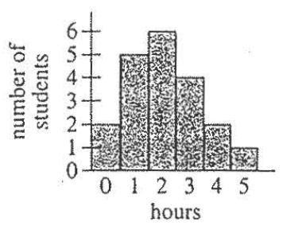
The teacher decides to show the data in a circle graph (pie chart).
What should be the measure of the central angle of the sector for 3 hours?
The bar chart above shows the distribution of marks scored by 60 pupils in a test in which the
maximum score was 10.
If the pass mark was 5, what percentage of the pupils failed the test?
From the Bar Graph,
$1$ student earned $0$
$3$ students earned $1$
$4$ students earned $2$
$7$ student earned $3$
$10$ students earned $4$
$8$ students earned $5$
$7$ student earned $6$
$9$ students earned $7$
$8$ students earned $8$
$2$ students earned $9$
$1$ students earned $10$
(11.) An American study published in a recent year claimed to find evidence of voting by noncitizens.
The conclusion was based largely on a survey several years prior in which approximately 38,000
registered voters were asked both whether they voted and whether they were citizens.
A total of 339 of those surveyed reported being noncitizens, and a total of 48 of these people
also said they voted.
(a.) Based on the survey, what percentage of noncitizens claim to have voted?
(Round to the nearest whole number as needed.)
(b.) One difficulty with any survey is response error, in which, for example, people accidentally
check the wrong box.
Suppose that the response error rate for this survey was only 0.1%, meaning that 99.9% of those
surveyed answered the survey questions accurately.
How many people would have answered the citizenship question incorrectly?
(Round to the nearest whole number as needed.)
(c.) Assume that the result from part(b.) represents citizens who accidentally said they were
noncitizens when they were citizens, and that all these people voted.
If all other results from this survey were accurate, how would this one set of errors change the
number of noncitizens who voted?
(Type an integer)
(d.) How large a response error could have accounted for all the noncitizens voting found in the
survey?
(Round to two decimal places as needed.)
(e.) The original survey was repeated two years later, with some (but not all) of the same people
asked the same questions about citizenship and voting status that year.
There were indeed changes in responses to the citizenship question among those who participated
in the survey both times, suggesting response errors.
In addition, a total of 85 people claimed to be noncitizens in both surveys, and among these zero
reported having voted.
How does this result support the claims of those people who say the study was flawed and that, in
fact, it offered no evidence of noncitizen voting?
$
number\;\;surveyed = 38000 \\[3ex]
number\;\;who\;\;answered\;\;citizenship\;\;question\;\;incorrectly \\[3ex]
= 0.1\%\;\;of\;\;38000 \\[3ex]
= \dfrac{0.1}{100} * 38000 \\[5ex]
= 38 \\[3ex]
$
(c.)
48 people of those who reported being noncitizens, said they voted.
Based on a survey response error rate of 0.1%, 38 people would have said they were noncitizens.
This set of errors would mean that the number of noncitizens who voted = 48 − 38 = 10
noncitizens.
(d.)
38000 were surveyed
48 claimed to be noncitizens who voted
To account for all those who claimed to be noncitizen voters, the error rate would be:
what percent of 38000 is 48?
$
\dfrac{is}{of} = \dfrac{what\%}{100}...Percent-Proportion \\[5ex]
\dfrac{48}{38000} = \dfrac{what\%}{100} \\[5ex]
38000 * what\% = 48 * 100 \\[3ex]
what\% = \dfrac{48 * 100}{38000} \\[5ex]
what\% = 0.126315189 \\[3ex]
what\% \approx 0.13\% \\[3ex]
$
(e.)
The fact that there were zero voters among the 85 people who gave consistent answers about being
noncitizens suggests that no noncitizens voted.
(12.) Swayed by concerns for family and desires to be environmentally conscious, a movement has been
building across the nation to use green household cleaning products.
Consumers have been voting with their wallets in support of green products.
Unfortunately, some products advertise as being green when in reality they are not.
A label touting "natural" can be misleading.
Nancy Guberti, a nutritionist and healthy lifestyle coach shares that "Natural means nothing.
The consumer has to be educated. It's all about awareness" (2013).
In addition, the internet is awash with homemade recipes promoted as safe for your family and the
environment.
Making household cleaners from natural ingredients may give some a false sense of security and can place
pets at risk. Some may not realize how significant the danger can be to pets with some threats being
potentially even deadly.
A label touted as green can be misleading as risk to people and pets may still be present.
(Source: Associated Press. "Keep out of reach of pets: green cleaners not necessarily safe for
pets." The Christian Science Monitor. 5, Mar 2013. Retrieved from
http://www.csmonitor.com/The-Culture/Family/2013/0305/Keep-out-of-reach-of-pets-Green-cleaners-not-necessarily-safe-for-pets)
Which of the following should consumers do to be educated on the use of green products around family
pets? A. Read labels. B. Research the ingredients. C. Talk to their veterinarians. D. All of the above.
All of the above.
(13.) For these scenarios, identify the:
(a.) Population
(b.) Sample
(c.) Parameter
(d.) Statistic
(I.) The world population of a critically endangered tiger species has been decreasing steadily and now
stands at about 817.
Researchers studying the prevalence of a viral respiratory infection test 43 tigers for the infection.
(II.) 93 people who write with their left hand were given cognitive tests.
It was discovered that those participants who were given a suggestion the hand they write with might
affect their performance on the test actually did worse on the test.
(III.) In a survey of 276 small business owners, 49% said that the most common job interview mistake
is to have little or no knowledge of the company where the applicant is being interviewed.
(IV.) A recent telephone poll of 999 randomly selected men revealed that 7 in 10 believe there has been
progress in finding a cure for cancer in the last 28 years.
(V.) In a test of the effectiveness of garlic for lowering cholesterol, 48 teenagers were treated with
garlic in a processed tablet form.
Cholesterol levels were measured before and after the treatment.
The average (mean) change in the subjects' cholesterol level was 3.4 mg/dL.
(VI.) Astronomers typically determine the distance to a galaxy (a huge collection of billions of
stars) by measuring the distances to just a few stars within it and taking the mean (average) of these
distance measurements.
(VII.) In 2017 the Pew Research Center polled 3930 adults in the United States and found that 43%
reported playing video games often on some kind of electronic device.
(VIII.) A study done at the Center for Disease at a certain university tracked 17,307 asymptomatic
patients with a certain disease who started therapy at different points in the progression of the
infection.
It was discovered that asymptomatic patients who postponed antiretroviral treatment until their disease
was more advanced faced a higher risk of dying than those who had initiated drug treatment earlier.
(IX.) A study of acupuncture used in the relief of chronic nonspecific low back pain compared
acupuncture treatments to "usual care" in a sample of 264 patients.
The researchers reported "modest benefit to health" for acupuncture patients and a slightly higher
cost than for usual care treatments.
(X.) The U.S. Supreme Court has ruled that no state or local government may require the reading
of the LORD's Prayer or Bible verses in public schools.
Do you approve or disapprove of the court ruling?
In 1974, 30.8% of respondents approved of the ruling and 66.1% disapproved.
In 2014, 39.1% of respondents approved of the ruling and 56.7% disapproved.
(I.) Population: All 817 of this species Sample: The 43 tigers tested Parameter: The percentage of all 817 of this species with this respiratory infection Statistic: The percentage of the 43 tigers tested with this respiratory infection
(II.) Population: All people who write with their left hand. Sample: 93 people who were studied. Parameter: Test scores for all people, categorized by whether or not each individual was
given a suggestion. Statistic: Test scores for the 93 people studied, categorized by whether or not each
individual was given a suggestion.
(III.) Population: All small business owners Sample: The 276 small business owners selected Parameter: The percentage of all small business owners who said that the most common job
interview mistake is to have little or no knowledge of the company where the applicant is being
interviewed Statistic: 49% of the small business ownse selected said that the most common job interview
mistake is to have little or no knowledge of the company where the applicant is being interviewed.
(IV.) Population: All men in the country Sample: The 999 men selected Parameter: The percentage of all men in the country who believe there has been progress Statistic: 7 out of 10
(V.) Population: All teenagers Sample: The 48 teenagers in the study Parameter: The average change in the levels of cholesterol (in mg/dL) of all teenagers after
receiving the garlic treatment Statistic: The average change in the levels of cholesterol (in mg/dL), 3.4, of the
teenagers in the study after receiving the garlic treatment
(VI.) Population: All stars in the galaxy Sample: The stars that were selected for measurement Parameter: The mean distance between all stars in the galaxy and Earth Statistic: The mean distance between all stars that were selected for measurements and Earth
(VII.) Population: Adults in the United States Sample: 3930 adults surveyed Parameter: The percentage of all United States adults who play video games. Statistic: The 43% of the sample who play video games.
(VIII.) Population: All asymptomatic patients with the disease who have undergone treatment. Sample: 17,307 asymptomatic patients with the disease. Parameter: The survival rates and the times at which treatment began. Statistic: The survival rates and the times at which treatment began for those in the sample.
(IX.) Population: All patients with chronic nonspecific low back pain. Sample: The 264 patients with chronic nonspecific low back pain. Parameter: The percentage of all patients who benefited from acupuncture and the cost of the
treatment. Statistic: The percentage of the given 264 patients who benefited from acupuncture and the
cost of the treatment.
(X.) Population: All Americans. Sample: The people that were surveyed. Parameter: The percentage of Americans that approve of the ruling. Statistic: The percentage of people surveyed that approve the ruling.
(14.) ACT The principal of Lowe High School (LHS) authorized a study to estimate the percent of
the LHS student population that will attend a 4-year college after
graduation.
LHS students in honors courses were asked about their postgraduation plans, and their responses were
recorded.
Students in other courses were NOT included in the study.
Which of the following phrases best describes the principal's study?
A. Randomized census B. Randomized experiment C. Nonrandomized experiment D. Randomized sample survey E. Nonrandomized sample survey
The survey went to a group of people (LHS students in honors courses) when the study deals with the
entire student population (estimate the percent of the LHS student population)
Other groups of people (LHS students in other courses) were left out.
This is not a randomized survey because every student did not have equal probability of being
selected to participate in the survey.
It is a Nonrandomized sample survey.
Use the following information to answer Questions 15 – 17
ACT The whole number test scores of all 30 students in Ms. Smith's science class are represented
in the cumulative
frequency bar graph below.
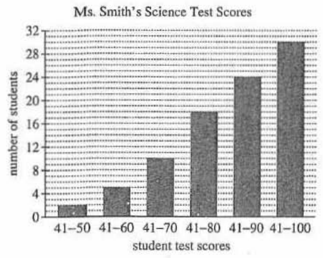
(15.) How many students in Ms. Smith's science class had a score greater than 70 on the test?
This is a cumulative frequency bar graph.
Let us draw the frequency table for this graph.
Be reminded that the number of students are cumulative frequencies, so we need to find the
frequencies.
Student Test Scores
Number of Students (Cumulative Frequencies)
Frequencies, F
41 – 50
2
$2$
41 – 60
5
$5 - 2 = 3$
41 – 70
10
$10 - 5 = 5$
41 – 80
18
$18 - 10 = 8$
41 – 90
24
$24 - 18 = 6$
41 – 100
30
$30 - 24 = 6$
$\Sigma F = 30$
The number of students in Ms. Smith's science class had a score greater than 70 on the test
is the sum of the frequencies of these classes: 41 – 80; 41 – 90; 41 – 100
= 8 + 6 + 6
= 20 students.
(16.) The students in Mr. Cho's class took the same test as those in Ms. Smith's class.
The number of students in Mr. Cho's class with a score in the range 41 – 50 was 3 less than 4
times the number of students in Ms. Smith's class with a score in the range 41 – 50.
How many students in Mr. Cho's class had a score in the range 41 – 50 on this test?
Let us draw another frequency table for the class intervals and the frequencies
Class Intervals
Frequency, F
41 – 50
2
51 – 60
3
61 – 70
5
71 – 80
8
81 – 90
6
91 – 100
6
$\Sigma F = 30$
Number of students in Ms. Smith's class with a score in the range 41 – 50 = 2 (because the
frequency for that class is 2)
Let the number of students in Mr. Cho's class with a score in the range 41 – 50 = p
$
3\;\;less\;\;than\;\;4\;\;times\;\;2 = 4(2) - 3 \\[3ex]
p = 4(2) - 3 \\[3ex]
p = 8 - 3 \\[3ex]
p = 5 \\[3ex]
$
Number of students in Ms. Smith's class with a score in the range 41 – 50 = 5
(17.) SamDom needs to select a simple random sample of three from nine friends who will participate in a
survey.
Assume the friends are numbered 1, 2, 3, 4, 5, 6, 7, 8, and 9.
Select three friends, using the second row of digits in the random number table.
Read off each digit, skipping any digit not assigned to one of the friends.
The sampling is without replacement, meaning that he cannot select the same person twice.
Write down the numbers chosen.
(1)
(2)
(3)
(4)
1
37330
87385
32323
71009
2
46254
15935
65321
89215
3
65216
32341
68693
55931
Second row of digits and Without Replacement:
46254 15935 65321
89215
Beginning from left to right:
The numbers of the three subjects selected are: 4, 6, 2
(18.) What determines if a person is left-handed or right-handed?
Scientists for years have suspected that our genes may play a role and have been studying the connection
to determine the role of genes in our handedness.
One research study involved 3,394 participants who were tested in their dexterity with each hand to
determine the strength of left- versus right-handedness.
The difference in the time needed to complete a task with the left versus right hand was recorded and
compared to "a statistical sweep of DNA" (Hesman Saey, 2013).
The study highlighted a particular gene that appeared in previous studies and also identified other
genes that may play a role.
How various genes impact handedness has not been fully realized and research is ongoing.
For now, science has concluded only that handedness is a result of genetic variation.
(Source: Hesman Saey, T. "Genes for body symmetry may also control handedness." Science News. 13,
Sept 2013.
retrieved from https://www.sciencenews.org/article/genes-body-symmetry-may-also-control-handedness)
Using the information in the above information on gene research, which of the following statements is
not true? A. Observational studies have been utilized. B. Gene research related to handedness is ongoing. C. An individual's genes are suspected in determining handedness. D. Handedness is determined by one specific gene.
D. Handedness is determined by one specific gene.
The study highlighted a particular gene that appeared in previous studies and also
identified other genes that may play a role.
(19.) ACT Data from a random sample of 335 car owners in a certain city are listed below.
The table indicates the number of owners in 3 age brackets (16–25, 26–45, 46–60) who
own cars from 3 car companies (A, B, C) in this city.
Each owner in the sample owns only 1 car.
Car companies
Age (in years)
A
B
C
Total
16–25
26–45
46–60
16
54
65
24
48
23
40
53
12
80
155
100
Total
135
95
105
335
A circle graph will be drawn with 3 sectors each representing the proportion of owners from Company A,
B, and C who are 16 to 25 years old.
What is the measure of the central angle for the Company A sector of the graph?
(I.) The website scholarshipstats.com collected data on all 5341 NCAA basketball players for the 2017
season and found a mean height of 77 inches.
A. Is the number 77 a parameter or a statistic? B. Identify the population and explain your choice.
(II.) A poll is conducted in which 1011 randomly selected registered voters from Texas are asked if they
approve of the job their governor is doing.
What is the population for this study?
(III.) What does it mean is we say that: a sample is representative of the population?
(IV.) Poll X predicts that a presidential candidate will receive 48% of the vote, while Poll Y
predicts that he will receive 54% of the vote.
Both polls have a margin of error of 4 percentage points. What can you conclude?
(V.) How can making an experiment single-anonymous or double-anonymous help?
(I.) (a.) 77 is a parameter because the
(b.) Population is all NCAA basketball players in the 2017 season because they are the entire group
of interest.
(II.) The population is all registered voters in the state of Texas because this is the entire group
that is being selected from randomly.
(III.) The results found for the sample are similar to those we would expect to find for the entire
population.
(IV.) Margin of error = 4%
Poll X: 48%
Poll Y: 54%
Poll X: Confidence Interval = (48 − 4, 48 + 4) = (44, 52)
Poll Y: Confidence Interval = (54 − 4, 54 + 4) = (50, 58)
The two polls are consistent with each other because the confidence intervals overlap.
(V.) If an experiment is anonymous, then any effect arising from psychological factors should
affect all groups equally.
(21.) ACT Marine biologists collected a sample of 40 adult sea
turtles from Hammerhead Bay and estimated the age, in whole years, of each turtle.
The histogram below shows the frequency of sea turtles for each of the estimated age groups.
What is the maximum possible number of sea turtles that could have had an estimated age of 45 years?
45 falls in between 39.5 — 49.5
The height of the rectangular bar (frequency) for those age intervals is 10
This implies that 10 sea turtles from Hammerhead Bay have ages between 39.5 and up to 49.5
This implies that the maximum possible number of sea turtles that could have had an estimated age of
45 years is 10 sea turtles.
(22.) Assume the Centers for Disease Control and Prevention (CDC) conducts an annual Youth Risk
Behavior Survey, surveying over 15,000 high school students.
The 2015 survey reported that, while cigarette use among high school youth had declined to its lowest
levels, 24% of those surveyed reported using e-cigarettes.
(a.) Identify the sample.
(b.) Idenfify the population.
(c.) Is the value 24% a parameter or a statistic?
(d.) What symbol would we use for the value?
(a.) The sample is the over 15,000 high school students.
(b.) The population is high school students.
(c.) 24% is a statistic.
(d.) It is the sample proportion. The symbol is p̂
Use the following information to answer Questions 23 – 25
ACT In 2012, pollsters for the Gallup Organization asked a random sample of 1,014 adults, "On
average, about how much does your family spend on food each week?"
The table below lists the percent of the sample that gave each response.
For example, approximately 21% of adults in the sample responded that, on average, they spend no less
than $200 but no more than $299 on food each week.
Average amount spent
Percent of sample
Less than $50 $50 to $99 $100 to $124 $125 to $149 $150 to $199 $200 to $299 $300 or more
Did not give an amount
8%
17%
22%
4%
15%
21%
10%
3%
(23.) Which of the following expressions is equal to the approximate number of adults from the sample
that said they spend an average of less than $100 each week on food?
The percent of adults from the sample that said they spend an average of less than $100
each week on food are:
(1.) the percent of adults from the sample that spend no less than $50 and no more than
$90 plus
(2.) the percent of adults from the sample that spend less than $50
This is: 17% + 8% = 25%
Therefore, the approximate number of adults from the sample that said they spend an average of less
than $100 each week on food
= 25% of 1014
= 0.25(1014)
(24.) What percent of adults in the sample responded that they spend, on average, at least
$150 each week on food?
At least $150 means $150 or more
The percent of adults from the sample responded that they spend, on average, at least
$150 each week on food are:
(1.) the percent of adults from the sample that spend no less than $150 and no more
than $199 plus
(2.) the percent of adults from the sample that spend no less than $200 and no more
than $299 plus
(3.) the percent of adults from the sample that spend $300 or more
This is = 15% + 21% + 10%
= 46%
(25.) A pollster will create a circle graph using the information in the table.
One sector of the circle graph will represent the percent of adults in the sample who said they spend on
average of $300 or more on food each week.
What will be the measure of the central angle for that sector?
(26.) In 2017 the Gallup poll surveyed 1021 adults in the United States and found that 57% supported a
ban on smoking in public places. I. Identify the population II. Identify the sample. III. What is the parameter of interest? IV. What is the statistic?
I. The population is adults in the United States. II. The sample is the 1021 adults surveyed. III. The parameter is the percentage of all adults who support smoking bans. IV. The statistic is the 57% of the sample who supported such a ban.
(27.) The accompanying graph shows the distribution of data on whether houses in a large neighborhood
have a garage.
(A 1 indicates the house has a garage, and a 0 indicates it does not have a garage.)
(a.) Is this a bar graph or a histogram?
(b.) How could the graph be improved?
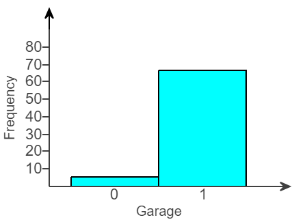
(a.) The graph is a histogram because the bars touch.
(b.) The graph could be improved by making it a bar graph or a pie chart. This change would make the
variable garage be seen as categories, not as numbers.
(28.) A researcher has designed a survey in which the questions asked do not produce a true answer.
What is this an example of?
A. Nonresponse bias B. Measurement bias C. Voluntary response bias D. Sampling bias
This is Measurement bias
ACT
Use the following information to answer questions 29 and 30
A large theater complex surveyed 5,000 adults.
The results of the survey are shown in the tables below.
Age groups
Number
21 – 30
31 – 40
41 – 50
51 or older
2,750
1,225
625
400
Moviegoer category
Number
Very often
Often
Sometimes
Rarely
830
1,650
2,320
200
Tickets are $9.50 for all regular showings and $7.00 for matinees.
(29.) ACT One of the following circle graphs represents the proportion by age group of the adults
surveyed. Which one?
We have about a minute to solve this question.
So, we shall find the sectorial angle for the first age group and then use the process of
elimination to
identify our answer
If necessary, we shall find the sectorial angle for the second age group and also eliminate options
We shall repeat this process until we get our answer
$
Sectorial\;\;\angle\;\;for\;\;each\;\;age\;\;group =
\dfrac{frequency\;\;of\;\;the\;\;age\;\;group}{\Sigma f} * 100 \\[5ex]
\underline{21-30\;\;Age\;\;Group} \\[3ex]
Sectorial\;\;\angle = \dfrac{2750}{5000} * 100 \\[5ex]
= 55\% \\[3ex]
$
Eliminate Options B., D., and E.
Let us calculate the sectorial angle for the second age group
$
\underline{31-40\;\;Age\;\;Group} \\[3ex]
Sectorial\;\;\angle = \dfrac{1225}{5000} * 100 \\[5ex]
= 24.5\% \\[3ex]
$
Eliminate Option C.
Option A. is the correct answer.
For those who just want to complete the rest of the age groups
(30.) ACT Suppose all the adults surveyed happened to attend 1 movie each in one particular week.
The total amount spent on tickets by those surveyed in that week was $\$44,000.00$
How many adults attended matinees that week?
$
Let\:\:the: \\[3ex]
Number\:\:of\:\:adults\:\:that\:\:attended\:\:matinees = m \\[3ex]
Number\:\:of\:\:adults\:\:that\:\:attended\:\:regular\:\:showings = r \\[3ex]
Adults:\:\: m + r = 5000...eqn.(1) \\[3ex]
Cost:\:\: 7m + 9.5r = 44000...eqn.(2) \\[3ex]
To\:\:find\:\:m, \:\:eliminate\:\: r \\[3ex]
9.5 * eqn.(1) \implies 9.5m + 9.5r = 47500...eqn.(3) \\[3ex]
eqn.(3) - eqn.(2) \implies \\[3ex]
(9.5m - 7m) + (9.5r - 9.5r) = 47500 - 44000 \\[3ex]
2.5m = 3500 \\[3ex]
m = \dfrac{3500}{2.5} \\[5ex]
m = 1400 \\[3ex]
$
$1400$ adults attended matinees that week.
(31.) A student has gathered data on self-perceived body image, where 1 represents "underweight," 2
represents "about right," and 3 represents "overweight."
A graph of these data is shown below.
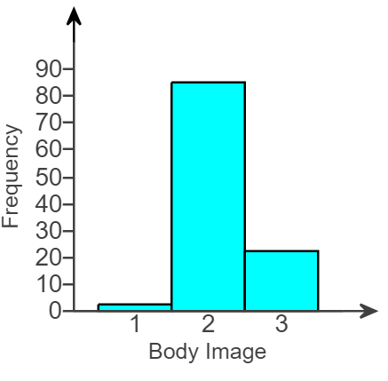
What type of graph would be a better choice to display these data, and why?
A better choice would be a bar graph or pie chart because the data set is categorical.
The numbers 1, 2, and 3 represent categories, so a histogram should not be used.
(32.) When reading about a survey, which of the following is important to know? A. What percentage of people who were asked to participate actually did so B. Whether the researchers chose people to participate in the survey or people themselves chose
to participate C. How many questions were in the survey D. Both A and B E. A, B and C
It is important to know whether there is nonreponse bias, which can be judged based on what
percentage of people who were asked to participate actually did so,
or voluntary response bias, which can be judged by whether the researchers chose people to
participate in the survey or people themselves chose to participate.
Therefore, it is important to know both A and B
(33.) ACT The frequency chart below shows the cumulative number of Ms. Hernandez's science
students whose
test scores fell within certain score ranges.
All test scores are whole numbers.
Score range
Cumulative number of students
65 – 70
65 – 80
65 – 90
65 – 100
12
13
19
21
How many students have a test score in the interval 71 – 80?
This is a case of cumulative frequency
The number of students who scored in the interval: 65 – 70
plus
The number of students who scored in the interval: 71 – 80
equals
The number of students who scored in the interval: 65 – 80
Therefore: 12 + what = 13
what = 13 − 12
what = 1
1 student scored in the interval: 71 – 80
(34.) Assume you are receiving a large shipment of batteries and want to test their lifetimes. Explain
why you would want to test a sample of batteries rather than the entire population. A. If you test all the batteries to failure you would have no batteries to sell. B. If you test all the batteries you cannot form any conclusions about the population. C. The percentage of defective batteries can change in the time it takes you to test all the
batteries.
The correct option is A.
If you test all the batteries to failure you would have no batteries to sell.
(35.) The graph shows the time spent on a typical day talking on the cell phone for some men and women.
Each person was asked to choose the one of four intervals that best fitted the amount of time they spent
on the phone (for example, "0 to 4 hours" or "12 or more hours").
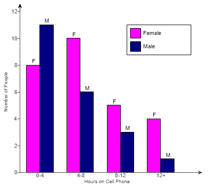
(a.) Identify the two variables.
State whether they are categorical or numerical and explain.
(b.) Is the graph a bar chart or a histogram?
Which would be the better choice for these data?
(c.) If you had the actual number of hours for each person, rather than just an interval, what type of
graph should you use to display the distribution of the actual numbers of hours?
(d.) Compare the modes of the two distributions, and interpret what you discover.
What does this say about the difference between men's and women's cell phone use?
(a.) The two variables sttaed in the question are:
(i.) Gender: is a categorical variable because it describes qualities
(ii.) Time range: is a categorical variable because it describes qualities
(b.) The graph is a bar chart.
It is the better choice since both variables are categorical.
(c.) Two histograms should be used since the time would be a numerical variable.
(d.) The mode for women is 4 – 8 hours because it is the tallest bar for women.
The mode for men is 0 – 4 hours because it is the tallest bar for men.
Therefore, the distributions show that women talk more.
(36.) Say you want to estimate the mean GPA of all students at your school.
You set up a table in the library asking for volunteers to tell you their GPAs.
Do you think you would get a representative sample? Why or why not? A. One would probably get a representative sample because the sample is random and was collected
without replacement (no subject is selected more than once).
B. One would probably not get a representative sample because of sampling bias (students who
volunteer will probably have higher GPAs than students who don't volunteer) and response bias
(students may inflate their GPAs).
C. One would probably not get a representative sample because of response bias (students who
volunteer will probably have higher GPAs than students who don't volunteer) and measurement bias
(students may inflate their GPAs).
D. One would probably get a representative sample because the sample was collected using simple
random sampling.
If one attempts this, we do know there are about two groups of students that will show up:
(a.) Students who are true to their consciences that show up are mainly those with high GPAs.
Students with high GPAs will most likely, easily say their GPAs even in situations when they are not
asked, not to mention when they are asked.
This is because high GPA is worth bragging about. 😊
This is Response Bias
(b.) Some students who may feel pressured to come to the library or who are social media influencers
or socialites or publicists (especially if the event is a public event)
are likely to attend and falsify/inflate their GPAs.
This is Measurement Bias.
Hence, the correct option is C.
One would probably not get a representative sample because of response bias (students who volunteer
will probably have higher GPAs than students who don't volunteer) and measurement bias (students
may inflate their GPAs).
(37.) The dotplot shows the body mass index (BMI) for 141 randomly surveyed people from a certain
country.
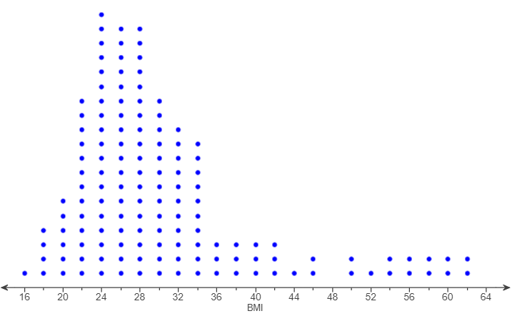
(a.) A BMI of more than 40 is considered morbidly obese.
Report the number of morbidly obese shown in the dotplot.
(b.) Report the percentage of people who are morbidly obese.
Compare this with a recent estimate that 3% of people from the country were morbidly obese.
(a.) Scale on the dotplot is 2 units
More than 40:
BMI of 42 = 3 people
BMI of 44 = 1 person
BMI of 46 = 2 people
BMI of 48 = 0 people
BMI of 50 = 2 people
BMI of 52 = 1 person
BMI of 54 = 2 people
BMI of 56 = 2 people
BMI of 58 = 2 people
BMI of 60 = 2 people
BMI of 62 = 2 poeple
BMI of 64 = 0 person
Σ Number of morbidly obese people = 19 people
According to the dotplot, 19 people are considered morbidly obese.
(b.) The percentage of people who are considered morbidly obese
$
= \dfrac{n(morbidly\;\;obese)}{\Sigma F} * 100 \\[5ex]
= \dfrac{19}{141} * 100 \\[5ex]
= \dfrac{1900}{141} \\[5ex]
= 13.475177305 \\[3ex]
\approx 13\%...to\;\;the\;\;nearest\;\;whole\;\;number \\[3ex]
$
This implies that the percentage of morbidly obese people in the survey (≈ 13%) is greater
than
the estimated percentage of people that are considered morbidly obese. (3%)
(38.) Explain the difference between sampling with replacement and sampling without replacement.
Say you had the names of 10 students, each written on a 3 by 5 notecard, and want to select two names.
Describe sampling with replacement.and sampling without replacement.
A. Draw a notecard, note the name, replace the notecard and draw again.
It is not possible the same student could be picked twice.
B. Draw a notecard, note the name, replace the notecard and draw again.
It is possible the same student could be picked twice.
C. Draw a notecard, note the name, do not replace the notecard and draw again.
It is possible the same student could be picked twice.
D. Draw a notecard, note the name, do not replace the notecard and draw again.
It is not possible the same student could be picked twice.
Sampling with replacement:
Draw a notecard, note the name, replace the notecard and draw again.
It is possible the same student could be picked twice.
Sampling without replacement:
Draw a notecard, note the name, do not replace the notecard and draw again.
It is not possible the same student could be picked twice.
(39.) The graph shows ages of females (labeled 1) and males (labeled 0) who are majoring in psychology
in a four-year college.
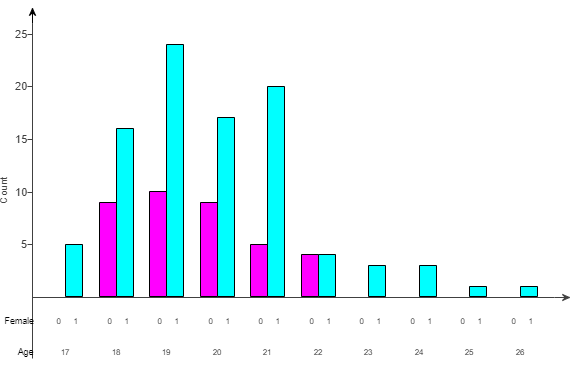
(a.) Is the graph a histogram or a bar graph? How do you know?
(b.) What type(s) of graph(s) would be more appropriate?
(a.) The graph is a bar graph because the bars are separated.
(b.) Two histograms or a pair of dot plots with a common horizontal axis would be more appropriate
since the given data are numerical.
(40.) Consider an experiment designed to test whether cash incentives improve school attendance.
The researcher chooses two groups of 100 high school students.
She offers one group $10 for every week of perfect attendance.
She tells the other group that they are part of an experiment but does not give them any incentive.
(a.) Identify the treatment group.
(b.) Identify the control group.
(a.) The students who received an incentive represent the treatment group.
(b.) The students who do not receive an incentive represent the control group.
(41.) Dominic needs to select a simple random sample of two from six friends who will participate in a
survey.
Assume the friends are numbered 1, 2, 3, 4, 5, and 6.
Use the line from a random number table shown below to select the sample.
Begin from the left.
0 5 8 5 7 8 1 4 9 9 7
2 4 3 5 2 1 1
0 6 7 5 5 1
Beginning from then left and Without replacement: 1st Batch of Numbers
0: Not among the numbered friends: Skip
5: Okay...first friend selected
8: Not among the numbered friends: Skip
5: Has already been selected: Skip
7: Not among the numbered friends: Skip
8: Not among the numbered friends: Skip
2nd Batch of Numbers
1: Okay...second friend selected
The two friends selected are: 5 and 1
(42.) The existence of multiple mounds in a distribution is sometimes a sign of which of the following?
A. The data is not from a random sample. B. All the values in the data are centered around one typical value. C. The graph of the distribution was drawn incorrectly. D. Two or more very different groups have been combined into a single collection.
D. Two or more very different groups have been combined into a single collection.
Sometimes, the presence of multiple mounds can indicate that there have been multiple groups
combined into a single sample.
For example, if a group that has a right-skewed distribution were combined with a group that has
a left-skewed distribution, the result would be a sample that has two mounds.
(43.) The dotplot shows the cholesterol level of 99 adults from a survey in 2010.
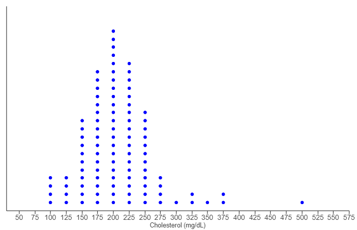
(a.) A total cholesterol level of 240 mg/dL (milligrams per deciliter) or more is considered
unhealthy.
Report the number of people in this group with unhealthy cholesterol levels.
(b.) Knowing that there are a total of 99 people in this sample, report the percentage of people with
unhealthy total cholesterol levels.
How does this compare with an estimate from 2010 that 18% of people had unhealthy cholesterol levels?
(a.) Scale on the dotplot is 25 units
240 mg/dl or more:
Cholesterol level of 250 = 12 people
Cholesterol level of 275 = 4 people
Cholesterol level of 300 = 1 person
Cholesterol level of 325 = 2 people
Cholesterol level of 350 = 1 person
Cholesterol level of 375 = 2 people
Cholesterol level of 500 = 1 person
Σ Number of morbidly obese people = 23 people
There are 23 people in this group with unhealthy cholesterol levels.
(b.) The percentage of people from this sample with unhealthy total cholesterol levels is:
$
= \dfrac{n(unhealthy\;\;cholesterol\;\;levels)}{\Sigma F} * 100 \\[5ex]
= \dfrac{23}{99} * 100 \\[5ex]
= \dfrac{2300}{99} \\[5ex]
= 23.23232323 \\[3ex]
\approx 23.2\%...to\;\;1\;\;decimal\;\;place \\[3ex]
$
This implies that the percentage of people from this sample with unhealthy total cholesterol levels
(≈ 23.2%) is more than
the estimate (18%).
(44.) Assume your class has 30 students and you want a random sample of 10 of them.
A student suggests asking each student to flip a coin, and if the coin comes up heads, then he or she
is in your sample.
Explain why this is not a good sampling approach.
A. This method is not good because it is not random. B. This method is not good because it will result in sampling bias. C. This method is not good because it will likely result in measurement bias. D. This method is not good because it is unlikely to result in a sample size of 10.
What if there are more than 10 students whose coin flips turned up heads?
You will then have to deal with how to select only 10 that are needed.
OR
What if there are less than 10 students whose coin flips turned up heads?
It is possible that 21 students had their coin flips land on tails.
So, this approach is not reliable.
It is not a good approach because it is not likely to result in a sample size of 10.
(45.) A school district conducts a survey to determine whether voters favor passing a bond to fund
school renovation projects.
All registered voters are called.
Of those called, 10% answer the survey call.
Of those who respond, 70% say they favor passing the bond.
Give a reason why the school district should be cautious about predicting that the bond will pass.
A. This was only one survey and people's opinions change over time.
B. There is nonresponse bias.
The results could be biased because the small percentage who chose to return the survey might be very
different from the majority who did not return the survey.
C. The entire population was surveyed and therefore inferences cannot be drawn.
D. There is measurement bias.
The questions could have been worded in such a way that the respondents' responses were influenced.
Let's assume the number of registered voters = 1000
10% (0.1 * 1000 = 100) responded to the survey.
90% (0.9 * 1000 = 900) did not respond.
So, only very few responded to the survey.
There is already a bias: Nonresponse Bias because a lot of people did not respond to the survey.
Of those who responded:
70% (0.7 * 100 = 70) are in favor of passing the bond.
So, 930 (1000 - 70 = 930) voters may probably would not have been in favor of passing the bond.
The survey is biased.
B. There is nonresponse bias.
The results could be biased because the small percentage who chose to return the survey might be
very different from the majority who did not return the survey.
(46.) Indicate whether each study is an observational study or a controlled experiment.
(a.) A local public school encourages, but does not require, students to wear uniforms.
The principal of the school compares the grade point averages of students at this school who wear
uniforms with the GPAs of those who do not wear uniforms to determine whether those wearing uniforms
tend to have higher GPAs.
(b.) A student watched picnickers with a large cooler of soft drinks to see whether teenagers were less
likely than adults to choose diet soft drinks over regular soft drinks.
(c.) A researcher is interested in the effect of music on memory.
She randomly divides a group of students into three groups: those who will listen to quiet music,
those who will listen to loud music, and those who will not listen to music.
After the appropriate music is played (or not played), she gives all the students a memory test.
(d.) Patients with multiple sclerosis are randomly assigned a new drug or placebo and are then given a
test of coordination after six months.
(e.) A group of boys is randomly divided into two groups.
One group watches violent cartoons for one hour, and the other group watches cartoons without violence
for one hour.
The boys are then observed to see how many violent actions they take in the next two hours, and the two
groups are compared.
(f.) Patients with Alzheimer's disease are randomly divided into two groups.
One group is given a new drug, and the other is given a placebo.
After six months they are given a memory test to see whether the new drug fights Alzheimer's better
than a placebo.
(a.) This is an observational study.
The principal does not randomly assign students to either wear or not wear uniforms.
Random assignment is essential to conducting a controlled experiment.
(b.) This is an observational study.
(c.) This is a controlled experiment.
She assigns students to the control and treatment groups at random in order to control for all
relevant factors aside from the effect of music on memory, which is essential to conducting a
controlled experiment.
(d.) This is a controlled experiment because the patients were assigned drugs by those conducting
the study.
(e.) The study is a controlled experiment.
(f.) This is a controlled experiment.
The researchers randomly assigned patients to either a treatment or control group, and they gave
the patients a test afterwards to identify the effect of the new drug.
This satisfies a key criterion of controlled experiments.
(47.) The pie chart reports the number of hours of sleep "last night" for 116 college students.
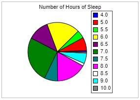
(I.) What would be a better type of graph for displaying these data? Select all that apply.
A. Bar Chart. B. Histogram. C. Dot Plot. D. Pareto Chart.
(II.) Explain why this pie chart is hard to interpret.
A. The sample of students is too large causing too many different results for the number of hours
of sleep. B. There are so many possible numerical values causing the pie chart to have too many "slices",
which makes it difficult to tell which is which. C. The colors chosen for the chart are too similar making it hard to tell which "slice" goes to
what category. D. The pie chart only shows the proportions of the students who got a certain number of hours of
sleep, not the frequency of students who got a certain number of hours of sleep.
(I.) B. Histogram. C. Dot Plot.
This is because the data: number of hours of sleep "last night" for 116 college students is
numerical.
If the variable is numerical, a dotplot, histogram, or stemplot is used.
(II.) B. There are so many possible numerical values causing the pie chart to have too many
"slices", which makes it difficult to tell which is which.
(48.) ACT A random number generator that generates an integer 1 through 6 will be used 15,000
times.
Each time an integer is generated, the number will be recorded.
Which of the following descriptors will most likely characterize the distribution of the 15,000 recorded
numbers?
F. Bimodal G. Normal H. Skewed left J. Skewed right K. Uniform
Random Number Generator: the event is random
Each outcome of the event: : 1, 2, 3, 4, 5, 6 has an equal likelihood of occurrence. In other words,
the
probability of obtaining each of the outcomes is the same
Hence, the distribution of the 15,000 is a uniform distribution.
(49.) A teacher at a community college sent out questionnaires to evaluate how well the administrators
were doing their jobs.
All teachers received questionnaires, but only 10% returned them.
Most of the returned questionnaires contained negative comments about the administrators.
Explain how an administrator could dismiss the negative findings of the report.
A. The entire population was surveyed and therefore inferences cannot be drawn.
B. This was only one survey and people's opinions change over time.
C. There is measurement bias.
The questions could have been worded in such a way that the respondents responses were influenced.
D. There is nonresponse bias.
The results could be biased because the small percentage who chose to return the survey might be very
different from the majority who did not return the survey.
Let's assume the number of teachers = 1000
All teachers received the questionnaires.
But only 10% (0.1 * 1000 = 100) returned them.
90% (0.9 * 1000 = 900) did not return the questionnaires.
So, only very few responded.
There is already a bias: Nonresponse Bias because a lot of people did not respond to the survey.
D. There is nonresponse bias.
The results could be biased because the small percentage who chose to return the survey might be
very different from the majority who did not return the survey.
(50.) Consider an experiment designed to test whether cash incentives improve school attendance.
The researcher chooses two groups of 100 high school students.
She offers one group $10 for every week of perfect attendance.
She tells the other group that they are part of an experiment but does not give them any incentive.
How would you describe the experiment above?
A. The experiment is not blind because the researcher and students know which groups the students
are in. B. The experiment is double-blind because no one knows which group the students are in. C. The experiment is single-blind because the researcher only paid one group of students. D. It cannot be determined from the information given.
The correct answer is A.
The experiment is not blind because the researcher and students know which groups the students are
in.
(51.) The histogram shows frequencies for the ages of 25 randomly selected CEOs.
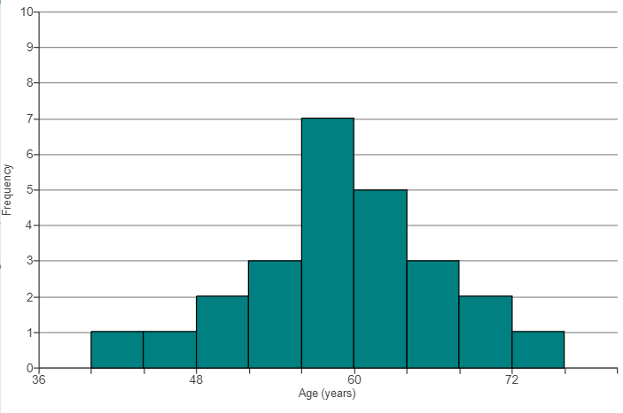
Convert this histogram to one showing relative frequencies by relabeling the vertical axis with the
appropriate
relative frequencies.
Note that the new labels for the vertical axis are the only thing that will change.
Choose the correct graph below.
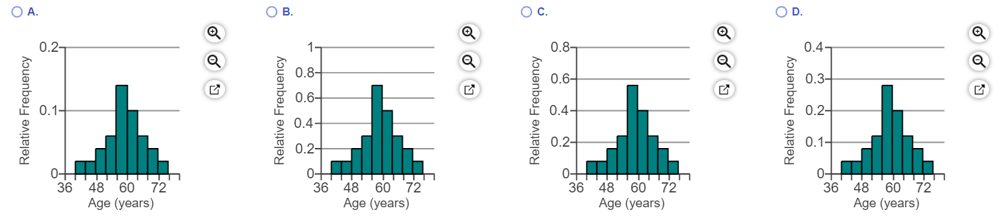
To find the bin width:
$
Bin\;\;width = \dfrac{48 - 36}{3} = \dfrac{12}{3} = 4 \\[5ex]
$
Let us construct a relative frequency table for the histogram of the data
Age (Years)
Frequency, F
Relative Frequency, RF
36 – 40
0
$
\dfrac{0}{25} = 0
$
40 – 44
1
$
\dfrac{1}{25} = 0.04
$
44 – 48
1
$
\dfrac{1}{25} = 0.04
$
48 – 52
2
$
\dfrac{2}{25} = 0.08
$
52 – 56
3
$
\dfrac{3}{25} = 0.12
$
56 – 60
7
$
\dfrac{7}{25} = 0.28
$
60 – 64
5
$
\dfrac{5}{25} = 0.2
$
64 – 68
3
$
\dfrac{3}{25} = 0.12
$
68 – 72
2
$
\dfrac{2}{25} = 0.08
$
72 – 76
1
$
\dfrac{1}{25} = 0.04
$
Reviewing all the options, we notice that the bar with the highest frequency of 7, (56 – 60) has a
relative frequency of 0.28
This implies that the correct option is D.
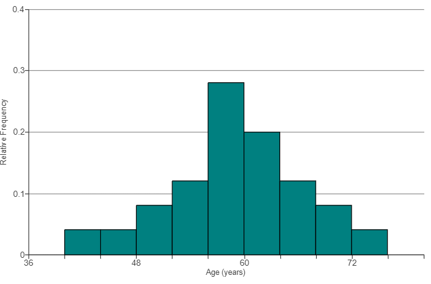
(52.) A survey asked gun owners what percentage of the time they had a loaded gun easily within reach when
at home.
The results for male gun owners are displayed in a bar chart and a pie chart.
Gun Availability Bar Chart
Gun Availability Pie Chart
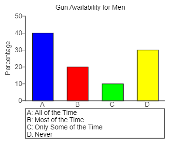
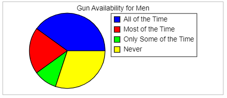
(a.) Which period was most frequent?
(b.) Use the graphs to estimate the difference in the percentage responding "All the Time" and "Never."
(c.) Is this easier to estimate using the bar chart or the pie chart?
(a.) The blue color key of "A: All of the Time" was the most frequent period.
(b.) Using the bar graph:
The percentage responding "All the Time" (A) is 40%
The percentage responding "Never" (D) is 30%
Difference = 40% − 30% = 10%
(c.) It is easier to use a bar chart because you can compare values using the heights of the bars,
whereas it can be hard to determine which of two slices in a pie chart is larger when they are close in
size and not adjacent to each other.
(53.) In carrying out a study on views of capital punishment, a student asked a question the two ways
shown below.
(I.) With persuasion:
"My brother has been accused of murder and he is innocent.
If he is found guilty, he might suffer capital punishment.
Now do you support or oppose capital punishment?"
(II.) Without persuasion:
"Do you support or oppose capital punishment?"
Support of capital punishment based on gender.
Men
With Persuasion
No Persuasion
For capital punishment
8
13
Against capital punishment
7
2
Women
With Persuasion
No Persuasion
For capital punishment
3
3
Against capital punishment
7
7
(a.) What percentage of those questioned with persuasion support capital punishment?
(b.) What percentage of those questioned without persuasion support capital punishment?
(c.) Compare the percentages in parts (a.) and (b.)
Is this what you expected? Explain. Select one option. A. The student spoke against capital punishment, and fewer who heard her statements against it
supported capital punishment, compared to those who did not hear the student's persuasion.
B. The student spoke against capital punishment, and more people who heard her statements
against it supported capital punishment, compared to those who did not hear the student's persuasion.
C. The percentage of people who supported capital punishment was the same whether or not they
heard the student's persuasion.
(54.) The graph is a special histogram with additional information; it was made using StatCrunch.
People who studied music as children were asked how many hours a day they practiced when they were
teenagers, and also whether they still play now that they are adults.
To understand the graph, look at the third bar (spanning 1.0 to 1.5); it shows that there were seven
people (the lower part of the bar, colored in fuschia and labeled "T") who practiced between 1.0 and
1.5 hours and did not still play as adults, and there were two people (the upper part of the bar,
colored in light blue and labeled "A") who practiced 1.0 to 1.5 hours and still play as adults.
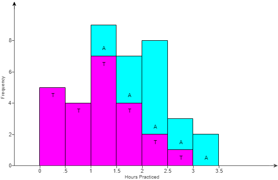
(a.) Comment on what the graph shows.
(b.) What other types of graphs could be used for this data set?
(a.) Let us analyze the special histogram:
Time Range (hours)
Number of Teenagers (T)
Number of Adults (A)
0 to up to 0.5
5
0
0.5 to up to 1
4
0
1 to up to 1.5
7
9 (7 + 2)
1.5 to up to 2
4
7 (4 + 3)
2 to up to 2.5
2
8 (2 + 6)
2.5 to up to 3
1
3 (1 + 2)
3 to up to 3.5
0
2
Σ T = 23
Σ A = 29
$
\underline{Teenagers} \\[3ex]
\dfrac{\Sigma T}{2} = \dfrac{23}{2} = 11.5 \\[5ex]
5 + 4 + 2.5 ...2.5\;\;in\;\;7 \implies 1 - 1.5 \\[3ex]
Center\;\;is\;\;in\;\;1 - 1.5 \\[3ex]
\underline{Adults} \\[3ex]
\dfrac{\Sigma A}{2} = \dfrac{29}{2} = 14.5 \\[5ex]
0 + 0 + 9 + 5.5 ...5.5\;\;in\;\;7 \implies 1.5 - 2 \\[3ex]
Center\;\;is\;\;in\;\;1.5 - 2 \\[3ex]
$
Those who still play tended to have practiced more as teenagers, which can be seen because the
typical value, or center, of the distribution for those who still play is 2 to 2.5 hours compared
to 1 to 1.5 hours for those how do not.
(b.) The other types of graphs that could be used for this data set are:
A pair of dotplots
A pair of histograms
(55.) Data on obesity rates for adults in a certain region are displayed in the bar plot for three age
groups.
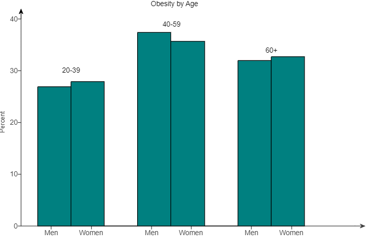
(a.) Which age group typically has the highest rate of obesity?
(b.) Comment on any similarities and differences in the obesity rates of men and women.
(a.) The age group that has the highest rate of obesity is: 40 — 59 because it has the tallest
bars.
(b.) The obesity rates for women are slightly higher in the 20 — 39 and 60+ age groups.
The obesity rate for men is higher in the 40 — 59 age group.
(56.) What is the first step in almost every investigation of data?
A. Make an appropriate graph. B. Determine if the data contain any outliers. C. Describe the variability. D. Determine the center.
A. Make an appropriate graph.
The first step in every investigation of data is to make an appropriate graph.
(57.) The histogram shows the number of calories in a sample of fast-food items.
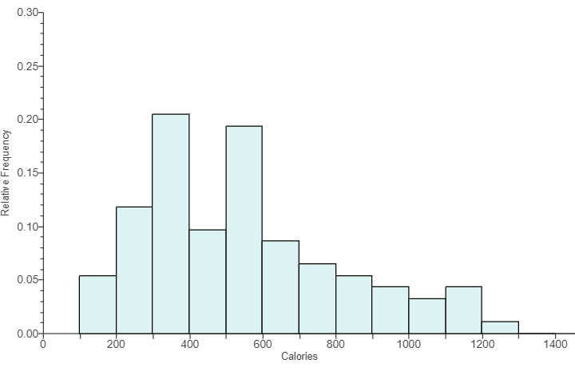
(a.) What is the bin width of the histogram?
(b.) Would this graph be best described as unimodal or bimodal?
(c.) Approximately what percentage of the fast-food items contained fewer than 300 calories?
(a.) To find the bin width:
$
Bin\;\;width = \dfrac{200 - 0}{2} = \dfrac{200}{2} = 100 \\[5ex]
$
(b.) Because the histogram has only two peaks (though they are not approximately equal in height),
the graph is best described as bimodal because there are two modes.
(c.) Scale on the Calories axis = bin width = 100 units
Σ Fewer than 300 calories = 5% + 12% = 17%
Approximately 17% of the fast-food items contained fewer than 300 calories.
(58.) Which of the following is a reason we can never draw cause-and-effect conclusions from
observational studies?
A. Researchers may be biased in the observations they choose to record.
B. Observational studies often do not involve a large enough sample to draw cause-and-effect
conclusions.
C. Potential confounding variables may explain the differences between groups rather than the
treatment variable.
D. Observational studies are not scientific in nature.
C. Potential confounding variables may explain the differences between groups rather than the
treatment variable.
(59.) Make the two given tables into one table by combining men for capital punishment into one group,
men opposing it into another, women for it into one group, and women opposing it into another.
The student who collected the data could have made the results misleading by trying persuasion more
often on one gender than on the other, but she did not do this.
She used persuasion on 10 of 20 women (50%) and on 15 of 30 men (50%).
Support of capital punishment based on gender.
Men
With Persuasion
No Persuasion
For capital punishment
4
12
Against capital punishment
11
3
Women
With Persuasion
No Persuasion
For capital punishment
4
5
Against capital punishment
6
5
(a.) Make a two-way table described in the problem statement.
(b.) Of the 30 men sampled, what percentage support capital punishment?
Round to one decimal place as needed.
(c.) Of the 20 women sampled, what percentage support capital punishment?
Round to one decimal place as needed.
(d.) On the basis of these results, for someone who is an advocate for life and does not support
capital punishment, would the person want men or women on any jury for murder trial?
(a.)
Men that support capital punishment
= Men who support capital punishment with persuasion + Men who support capital punishment without
persuasion
= 4 + 12
= 16
Men against capital punishment
= Men against capital punishment with persuasion + Men against capital punishment without persuasion
= 11 + 3
= 14
Women that support capital punishment
= Women who support capital punishment with persuasion + Women who support capital punishment
without persuasion
= 4 + 5
= 9
Women against capital punishment
= Women against capital punishment with persuasion + Women against capital punishment without
persuasion
= 6 + 5
= 11
Men
Women
For capital punishment
16
9
Against capital punishment
14
11
$
(b.) \\[3ex]
n(Men) = 16 + 14 = 30 \\[3ex]
n(Men\;\;who\;\;support\;\;capital\;\;punishment) = 16 \\[3ex]
\%(Men\;\;who\;\;support\;\;capital\;\;punishment) \\[3ex]
= \dfrac{n(Men\;\;who\;\;support\;\;capital\;\;punishment)}{n(Men)} * 100 \\[5ex]
= \dfrac{16}{30} * 100 \\[5ex]
= 53.33333333 \\[3ex]
\approx 53.3\% \\[3ex]
(c.) \\[3ex]
n(Women) = 9 + 11 = 20 \\[3ex]
n(Women\;\;who\;\;support\;\;capital\;\;punishment) = 9 \\[3ex]
\%(Women\;\;who\;\;support\;\;capital\;\;punishment) \\[3ex]
= \dfrac{n(Women\;\;who\;\;support\;\;capital\;\;punishment)}{n(Women)} * 100 \\[5ex]
= \dfrac{9}{20} * 100 \\[5ex]
= 45\% \\[3ex]
$
(d.) Based on these results, for any jury for murder trial,
a jury of women would be preferable because a higher percentage of them (100 - 45% = 55%) are not in
favor of capital punishment.
(60.) For the following scenarios, identify and write the symbols, as applicable the:
(a.) population mean
(b.) population proportion
(c.) sample mean
(d.) sample proportion
(I.) A city provides an open data set of commercial building energy use.
Each row of the data set represents a commercial building.
A sample of 250 buildings from the data set has a mean floor area of 36,790 square feet.
Of the sample, 26% were office buildings.
(II.) A city provides an open data set of the number of WiFi sessions at all of its public libraries.
For 2014, there were an average of 423,930.5 WiFi sessions per month at all the public libraries in
this city.
(III.) Chapman University conducts an annual Survey of American Fears.
One of the objects of this survey is to collect annual data on the fears, worries, and concerns of
Americans.
In 2017 the survey sampled 1207 participants.
One of the survey findings was that 16% believe that Bigfoot is a real creature.
(IV.) The Centers for Disease Control and Prevention (CDC) conducts an annual Youth Risk Behavior
Survey, surveying over 15,000 high school students.
The 2015 survey reported that, while cigarette use among high school youth had declined to its lowest
levels, 24% of those surveyed reported using e-cigarettes.
(I.) The sample mean, $\bar{x}$ = 36790
The sample proportion, $\hat{p}$ = 26%
(II.) The population mean, μ = 423,930.5
(III.) The sample is the 1207 participants.
The population is people in the United States.
The sample proportion, $\hat{p}$, a statistic = 16%
(IV.) The sample is the over 15,000 high school students.
The population is high school students.
The sample proportion, $\hat{p}$, a statistic = 24%
(61.) According to an organization, there are five leading causes of preventable death in a region.
They are shown in the Pareto chart below, where HBP is High Blood Pressure, TU is Tobacco Use, HBG is
High Blood Glucose, PA is Physical Activity, and OO and Overweight and Obesity.
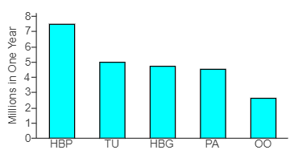
(a.) Estimate how many preventable deaths result from high blood pressure.
(b.) Estimate how many preventable deaths result from tobacco use.
(c.) Does this graph support the theory that the greatest rate of preventable death comes from
overweight and obesity, as some people have claimed?
(a.) Approximately 7.5 million preventable deaths in one year result from high blood pressure.
(b.) Approximately 5 million preventable deaths in one year result from tobacco use.
(c.) No, the graph does not support the theory that the greatest rate of preventable death comes
from overweight and obesity, because overweight and obesity do not cause the greatest number of
preventable deaths.
(62.) Is simple random sampling usually done with or without replacement?
A. Simple random sampling is usually done without replacement, which ensures that unbiased
samples are more likely to be chosen than biased samples of the same size.
B. Simple random sampling is usually done with replacement, which means that a subject can be
selected for a sample more than once.
C. Simple random sampling is usually done without replacement, which means that a subject cannot
be selected for a sample more than once.
D. Simple random sampling is usually done with replacement, which ensures that unbiased samples
are more likely to be chosen than biased samples of the same size.
C. Simple random sampling is usually done without replacement, which means that a subject
cannot be selected for a sample more than once.
(63.) A large collection of one-digit random numbers should have about 50% odd and 50% even digits
because five of the ten digits are odd (1, 3, 5, 7, and 9) and five are even (0, 2, 4, 6, and 8).
(a.) Find the proportion of odd-numbered digits in the following lines from a random number table.
Count carefully.
Round to two decimal places as needed.
9 2 0 7 8
6 7 8 6 6
1 3 6 9 1
1 8 9 2 8
3 1 4 7 4
5 5 3 0 9
(b.) Does the proportion found in part (a) represent $\hat{p}$ (the sample proportion) or p (the
population proportion)?
(c.) Determine the error in this estimate, the difference between $\hat{p}$ and p (or $\hat{p} -
p$)
Round to two decimal places as needed.
$
(a.) \\[3ex]
Number\;\;of\;\;odd-numbered\;\;digits = 16 \\[3ex]
Sample\;\;size = 30 \\[3ex]
Sample\;\;proportion = %\;\;of\;\;odd-numbered\;\;digits = \dfrac{16}{30} * 100 = 53.33333333\%
\\[5ex]
$
The given random number table consists of 53.33% odd-numbered digits.
(b.) The proportion found in part (a) represents $\hat{p}$ (the sample proportion)
(64.) What is the most common trick to mislead readers of bar graphs?
A. Change the color of the bars to make some categories appear more important than others.
B. Change the scale of the vertical axis so that it does not start at 0.
C. Change the scale of the horizontal axis so that it does not start at 0.
D. Change the width of the bars to make some categories appear more important than others.
B. Change the scale of the vertical axis so that it does not start at 0.
By changing the vertical axis so that it does not start at 0, minor differences in the heights of
the bars can be exaggerated to look very significant.
(65.) One of the authors wanted to determine the effect of changing answers on multiple-choice tests.
She studied the tests given by another professor, who had told his students before their exams that if
they had doubts about an answer they had written, they would be better off not changing their initial
answer.
The author went through the exams to look for erasures, which indicate that the first choice was
changed.
In these tests, there is only one correct answer for each question.
The results of her study is presented below:
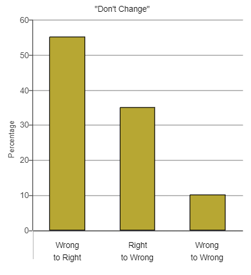
No because 55% of the changes were from a wrong answer to a right answer, while only 35% were
from a right answer to a wrong answer.
Thus, more than half of the erasures resulted in the student getting a question right when they
would have gotten it wrong if they had not changed their answer.
(66.) Which of the following is NOT one of the criteria for the "gold standard" for experiments?
A. Double-blinding, in which neither the subjects nor researchers know who is in which group.
B. Large sample size.
C. Random assignment of subjects to treatment or control groups.
D. Equal sample sizes for control and treatment group.
D. Equal sample sizes for control and treatment group.
(67.) Assume Blue Ridge Community College (BRCC) conducts an annual survey of American fears.
One of the objects of this survey is to collect annual data on the fears, worries, and concerns of
Americans.
In 2017, the survey sampled 1207 participants.
One of the survey findings was that 16% believe that Bigfoot is a real creature.
(a.) Identify the sample.
(b.) Identify the population.
(c.) Is the value 16% a parameter or a statistic?
(d.) What symbol would be used for this value?
(a.) The sample is the 1207 participants.
(b.) The population is all Americans (People in the United States).
(c.) 16% is a statistic.
(d.) It is the sample proportion. The symbol is p̂
(68.) Which of the following is not a way in which the Internet is influencing statistical graphics?
A. Allowing for a greater variety of graphical displays. B. Decreasing the use of misleading graphics. C. Increasing the use of interactive displays. D. None of the above.
B. Decreasing the use of misleading graphics.
The Internet is not decreasing the use of misleading graphics. (Compare to Fake News!)
(69.) Data on the percentage of adults living in a certain area who meet the federal aerobic fitness
(AF) and muscle strengthening (MS) standards are displayed in the bar plot.
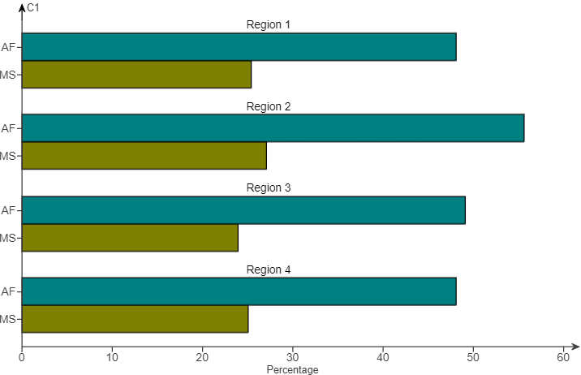
(a.) Comment on the fitness similarities and differences in these four regions.
(b.) Comment on the similarities and differences in aerobic and muscle-strengthening fitness among
adults in this area.
(a.) Fitness rates are slightly higher in Region 2 than in the other three regions.
(b.) In each region, aerobic fitness rates were higher than muscle-strengthening rates.
(70.) For these scenarios: describe a bar chart that would have the:
(a.) least variability
(b.) most variability
(I.) Suppose a group of school age children is asked, "Which of these three ice cream flavors do you
like the most: vanilla, chocolate, or strawberry?"
(II.) 500 applicants to California community colleges are asked to indicate one of these education goals
at the time of application: transfer to a four-year institution, an AA (Associate of Arts) degree, a
CTE (Career abd Technical Education) certificate, job retraining, or personal enrichment.
When we use the term: "variability", let us think about the term: "diversity"
The more diverse (more different options), the more variability (spread)
The less diverse (limited different options), the less variability (spread)
(I.)
(a.) A bar graph with the least variability would be one in which the children favored one
particular flavor, for example chocolate. (limited option)
(b.) A bar graph with the most variability would be one in which the same number of children favored
each flavor. (more options)
(II.)
(a.) A bar graph with the least variability would be one where most of the applicants had the same
education goal, for example to transfer. (limited option)
(b.) A bar graph with the most variability would be one in which the applicants were equally divided
among the five choices. (more options)
(71.) The accompanying table gives information on the top five countries from which residents of a
particular country adopted children one year.
Sketch an appropriate graph of the distribution, and comment on its important features.
Adoptions
Country
Number
Country C
4561
Country G
5641
Country R
2526
Country E
1896
Country K
909
(a.) One type of graph appropriate for showing this distribution is a bar chart.
Which of the following bar charts correctly shows the given distribution?
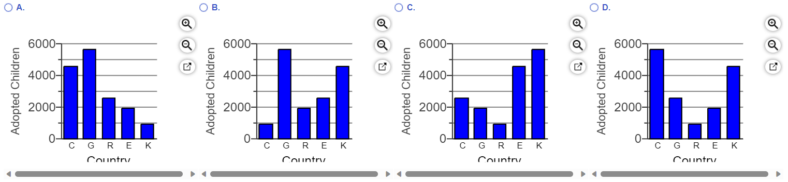
(b.) What other appropriate graphs cana be used for showing the given distribution?
(c.) Which of the following is the best description of the distribution's important features?
(a.) Country G has the highest number of adopted children.
So, Options C and D are eliminated, leaving us with Options A and B
Country G has the lowest number of adopted children.
This eliminates Option B, leaving us with Option A.
The bar chart that correctly shows the given distribution is: Option A.
(b.) Other appropriate graphs that can be used for showing the given distribution are:
Pareto charts and Pie charts because they are suited for presenting categorical variables.
(c.) The mode is Country G and the overall distribution has a high variation.
(72.) Data on the percentage of jobs that require various levels of education are displayed in the following
bar chart and pie chart.
Education Requirement Bar Chart
Education Requirement Pie Chart
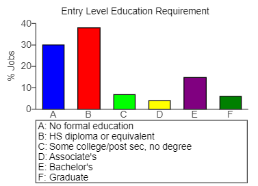
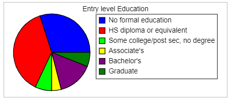
(a.) Approximately what percentage of jobs require some type of college degree (Associate's, Bachelor's,
or Graduate)?
(b.) Use the graphs to estimate the difference between the percentage of jobs that require a high school
diploma and those that require no formal education.
(c.) Is this easier to estimate using the bar chart or the pie chart?
(a.) Using the bar graph:
The percentage of jobs that require Associate's degree (D) is about 2.5%
The percentage of jobs that require Bachelor's degree (E) is about 18%
The percentage of jobs that require Graduate degree (F) is about 4.5%
∴ the percentage of jobs require some type of college degree (Associate's, Bachelor's, or
Graduate) is about 2.5% + 18% + 4.5% = 25%
(b.) Using the bar graph:
The percentage of jobs that require a high school diploma (B) is about 38%
The percentage of jobs that require no formal education (A) is about 30%
Difference = 38% - 30% = 8%
(c.) It is easier to use a bar chart because you can compare values using the heights of the bars,
whereas it can be hard to determine which of two slices in a pie chart is larger when they are close in
size and not adjacent to each other.
(73.) A researcher wants to determine the tasks given in these scenarios.
Describe how the researcher should apply the five basic steps in a statistical study.
(Assume that all the people in the poll answered truthfully.)
(I.) The percentage of college students that study all night before an exam.
(II.) The percentage of drivers that use a cell phone while driving.
(III.) The typical percentage of the bill that is left as a tip in restaurants.
(IV.) The average time to failure of batteries in a specific model of digital cameras.
(V.) The average number of professional truck drivers per company that have a clean driving record.
(I.) First Step: Population: All college students.
Objective: The researcher wants to estimate the percentage in this population that study all
night before an exam.
Second Step: Data Collection: The researcher should gather data about studying all night before an exam
from the largest sample of college students from which the researcher can gather data.
Third Step: Data Description: The sample statistic of interest is the percentage of college students in
the sample that study all night before an exam.
Fourth Step: Perform Inference: The researcher should use the sample statistic as an estimate for the
population value of the percentage of college students that study all night before an exam.
Fifth Step: Inferential Statistics: The researcher should use the methods of statistics to determine the
quality of the estimate of the population parameter and draw conclusions based on this estimate
accordingly.
(II.) First Step: Population: All drivers.
Objective: The researcher wants to estimate the percentage in this population that use a cell
phone while driving.
Second Step: Data Collection: The researcher should gather data about using a cell phone while driving
from the largest sample of drivers from which the researcher can gather data.
Third Step: Data Description: The sample statistic of interest is the percentage of drivers in the sample
that use a cell phone while driving.
Fourth Step: Perform Inference: The researcher should use the sample statistic as an estimate for the
population value of the percentage of drivers that use a cell phone while driving.
Fifth Step: Inferential Statistics: The researcher should use the methods of statistics to determine the
quality of the estimate of the population parameter and draw conclusions based on this estimate
accordingly.
(III.) First Step: Population: All people who go to restaurants.
Objective: The researcher wants to determine in this population, the average tip as a
percentage of the bill.
Second Step: Data Collection: The researcher should choose a representative sample of restaurant goers.
Third Step: Data Description: The researcher should determine the average tip for those in the sample.
Fourth Step: Perform Inference: The researcher should use the sample statistic to infer the population
value.
Fifth Step: Inferential Statistics: The researcher should use the methods of statistics to determine the
quality of the estimate of the population parameter and draw conclusions based on this estimate
accordingly.
(IV.) First Step: Population: All digital cameras of the specific model.
Objective: The researcher wants to determine the average time it takes the batteries in this
population of digital cameras to fail.
Second Step: Data Collection: The researcher should gather raw data about battery life from the largest
sample of drivers from which the researcher can gather data.
Third Step: Data Description: The sample statistic of interest is the average time for digital cameras in
the sample to have their batteries wear down.
Fourth Step: Perform Inference: The researcher should use the sample statistic as an estimate for the
population value of the average life of batteries and then use the methods of statistics to
determine how good that estimate is.
Fifth Step: Inferential Statistics: The researcher should use the methods of statistics to determine the
quality of the estimate of the population parameter and draw conclusions based on this estimate
accordingly.
(V.) First Step: Population: All companies.
Objective: The researcher wants to estimate the average number of truck drivers per company
that have a clean driving record.
Second Step: Data Collection: The researcher should gather data about clean driving records from the
largest sample of truck drivers about whom the researcher can gather data.
Third Step: Data Description: The sample statistic of interest is the average number of truck drivers per
company that have a clean driving record.
Fourth Step: Perform Inference: The researcher should use the sample statistic as an estimate for the
population value of the average number of truck drivers that have a clean driving record and then
use the methods of statistics to determine how good that estimate is.
Fifth Step: Inferential Statistics: The researcher should use the methods of statistics to determine the
quality of the estimate of the population parameter and draw conclusions based on this estimate
accordingly.
(74.) A categorical variable is only called bimodal under what circumstances?
A. The data consists of exactly two categories. B. Two categories are nearly tied for most frequent outcomes. C. Two categories have exactly the same frequency. D. One category occurs more frequently than any other.
B. Two categories are nearly tied for most frequent outcomes.
(75.) A Statistics student in Mr.C's class wants to determine the average (mean) number of robocalls
received each day by adults in the State of Virginia.
The following samples were obtained by the student.
Sample 1: The 532 adults in Virginia that responded to a survey published in the newspaper. Sample 2: The set of 532 Virginians randomly selected from a list of all licensed car owners in
Virginia. Sample 3: The first 532 people to visit a particular grocery store one day in the City of
Harrisonburg. Sample 4: The set of 532 Virginians with phone numbers randomly selected from a list of all phone
numbers in Virginia.
Which sample is the most representative sample of the population?
Give reasons for your answer.
Sample 4 is the most representative sample because it is a randomly selected sample.
It is not likely to be biased.
Sample 2 is randomly selected. However, more Virginians have a phone than a licensed car.
The list is likely biased because it includes only car owners.
Sample 1 is a convenience sample.
It is likely biased because it is limited to the newspaper readers.
Sample 3 is likely biased because it is limited to those in the City of Harrisonburg.
(76.) Consider an experiment designed to determine the effectiveness of a new drug.
The drug is given to participants in the treatment group, while participants in the control group
receive a placebo.
The randomized, double-anonymous study with 475 patients showed that 42% of those given the new drug
had a decrease in symptoms, while 63% of those given the placebo experienced improvement.
(a.) Which patients were in the treatment group and the control group?
(b.) Do the results appear to offer evidence that the new drug was effective? Why or why not?
(c.) Do the results appear to indicate that a placebo effect was present in these trials? Explain.
(d.) If you were on the panel deciding whether to approve the new drug, how would you vote based on
this study? Explain your reasoning.
(a.) Control Group: Those given the placebo Treatment Group: Those given the new drug
(b.) The new drug does not appear to be effective because a higher percentage of those that
took the placebo experienced improvement.
(c.) A placebo effect might be present because many subjects that took the placebo experienced
improvement.
However, it is possible that these subjects could have improved without taking the placebo, so
there is not enough information to be sure.
(d.) The new drug should not be approved, because it does not appear to be effective.
(77.) Use the row of numbers shown below to generate 12 random numbers between 01 and 99.
68073 81023 72868 57069 27401 94656 93902 96153
Starting at the beginning of the row, what are the first 12 numbers between 01 and 99 in the sample?
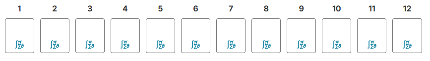
Starting at the beginning of the row (from left to right):
We shall look for two-digit numbers, because of the two digits: 01 and 99
So, the numbers are:
68, 07, 38, 10, 23, 72, 86, 85, 70, 69, 27, 40
(78.) For the following scenarios, identify and write the symbols, as applicable the:
(a.) population mean
(b.) sample mean
(c.) population standard deviation
(d.) sample standard deviation
(I.) In determining the mean age of all students at your school, you survey 30 students and find the
mean of their ages.
(II.) To estimate the commute time for all students at a college, 200 students are asked to report
their commute times in minutes.
The standard deviation for these 200 commute times was 19.8 minutes.
(III.) The mean GPA of all 3000 students at a college is 2.69.
A sample of 150 GPAs from this school has a mean of 2.43.
(IV.) The standard deviation of all professional NBA basketball players is 28.9 pounds.
A sample of 40 professional basketball players has a standard deviation of 22.5 pounds.
(I.) The mean, a statistic is the sample mean, $\bar{x}$
(II.) The standard deviation, a statistic, s = 19.8 minutes
(III.) The population mean, μ = 2.69, and the sample mean, $\bar{x}$ = 2.43
(IV.) The population standard deviation, σ = 28.9 pounds and the sample standard deviation,
s = 22.5 pounds.
(79.) Identify the sampling method in these studies.
(I.) Century High School offers eight sections of its Beginning Spanish course.
The school administration selects five of those sections and surveys all students in each of those
sections to determine study time (hours per week) for the course.
(II.) Researchers studying the use of antidepressants select 68 participants between the ages of 20 and
29, 68 participants between the ages of 30 and 39, and 68 participants between the ages of 40 and 49.
(III.) A taste test for chips and dip is conducted at the entrance to a restaurant.
(IV.) Every 200th laptop that comes off an assembly line is tested for durability.
(V.) An IRS (Internal Revenue Service) auditor randomly selects for audits 50 taxpayers in each of the
filing status categories: single, head of household, married filing jointly, and married filing
separately.
(VI.) Student ID numbers are randomly selected by a dean for a survey of student opinions on food
quality.
(VII.) A website predicts Chemistry award winners by polling readers who voluntarily respond by mail.
(I.) Cluster Sampling
(II.) Stratified Sampling
(III.) Convenience Sampling
(IV.) Systematic Sampling
(V.) Stratified Sampling
(VI.) Simple Random Sampling
(VII.) Convenience Sampling
(80.) Assume your class has 30 students and you want a random sample of 10 of them. Describe how to
randomly select 10 people from your class using the random number table.
A. Assign each student a pair of digits 00 – 29.
Read off pairs of digits from the random number table from left to right.
The students whose digits are called are in the sample.
Skip repeats.
Stop after 10 students are selected.
B. Assign each student a number 0 – 29.
Read off numbers from the random number table from left to right.
The students whose digits are called are in the sample.
Skip repeats.
Stop after 10 students are selected.
C. Assign each student a pair of digits 00 – 29 based on the day of the month in which he
or she was born.
Read off pairs of digits from the random number table from left to right.
The students whose digits are called are in the sample.
Skip repeats.
Stop after 10 students are selected.
D. Assign each student a number 0 – 29 based on the day of the month in which he or she was
born.
Read off numbers from the random number table from left to right.
The students whose digits are called are in the sample.
Skip repeats.
Stop after 10 students are selected.
A. Assign each student a pair of digits 00 – 29.
Read off pairs of digits from the random number table from left to right.
The students whose digits are called are in the sample.
Skip repeats.
Stop after 10 students are selected.
(81.) A researcher wants to study the effects of sleep deprivation on motor skills.
Nine people volunteer for the experiment:
Amanda, Brian, Christine, David, Emily, Fred, George, Heather, and Ivan.
Use the first row of digits in the random number table below to select a simple random sample of three
subjects (ignore zeros).
The other six subjects will go into the control group.
(a.) If the subjects are numbered 1 through 9 alphabetically, what are the numbers of the three subjects
selected?
(b.) List the subjects that will go in the treatment group.
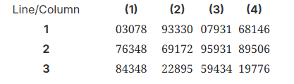
Use the first row of digits in the random number table (Beginning from left to right)
Ignore zeros
Subjects are numbered 1 through 9: implies that we should select single digit numbers
(a.) The numbers of the three subjects are: 3, 7, 8 (from the first row of the first column: 03078)
(b.) From: Amanda, Brian, Christine, David, Emily, Fred, George, Heather, and Ivan:
The three subjects, in the order selected are: Christine, George, and Heather.
(82.) Suppose that, when taking a random sample of three students' GPAs, you get a sample mean of
3.90. This sample mean is far higher than the college-wide (population) mean.
Does this prove that your sample is biased? Explain.
What else could have caused this high mean?
A. One or more of the students could have lied about their GPAs.
B. The sample may not be biased.
The high mean might have occurred by chance, since the sample size is very small.
C. The sample may not be biased.
The measurements may not have been precise.
D. Nothing other than bias could have caused this small mean.
B. The sample may not be biased.
The high mean might have occurred by chance, since the sample size is very small.
Since the students were chosen at random, it is likely that by chance the random selection only
picked students with high GPAs.
(83.) Use StatCrunch to generate and write down each list of numbers.
Select Data, highlight Simulate, then select Uniform.
A dialog box similar to the one shown here... will appear.
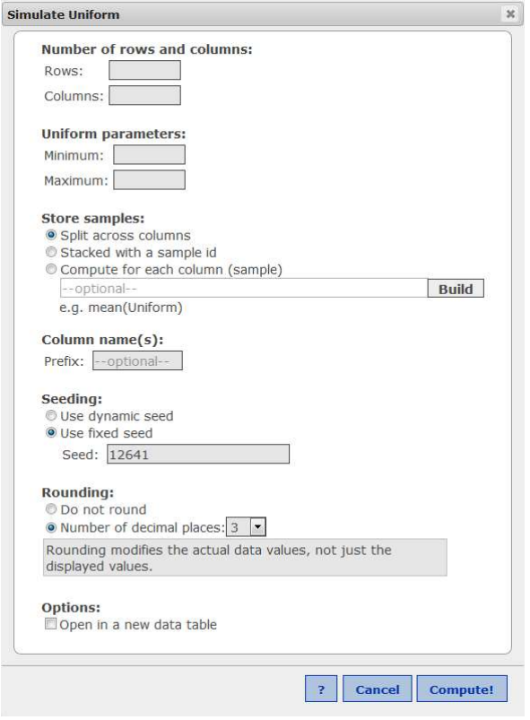
(a.) Generate ten random numbers between 0 and 1 using the fixed seed value 18081.
(b.) Generate ten random numbers between 0 and 10 using the fixed seed value 15055.
(c.) Generate ten random numbers between 1 and 2 using the fixed seed value 17699.
(d.) Generate ten random numbers between 10 and 20 using the fixed seed value 13024.
(Type integers or decimals rounded to three decimal places as needed.)
Set Up:
1st Step:
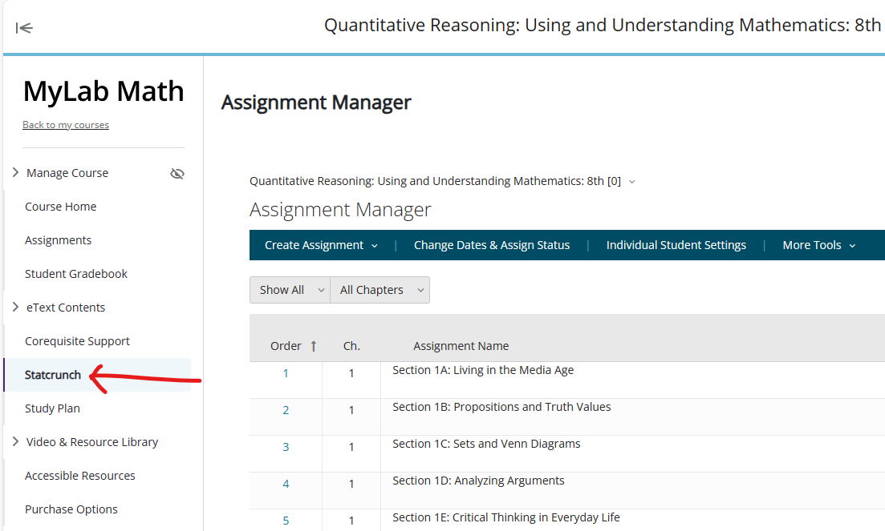
2nd Step:
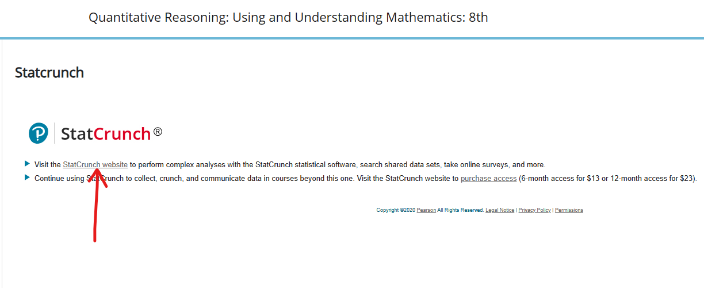
3rd Step:
4th Step:
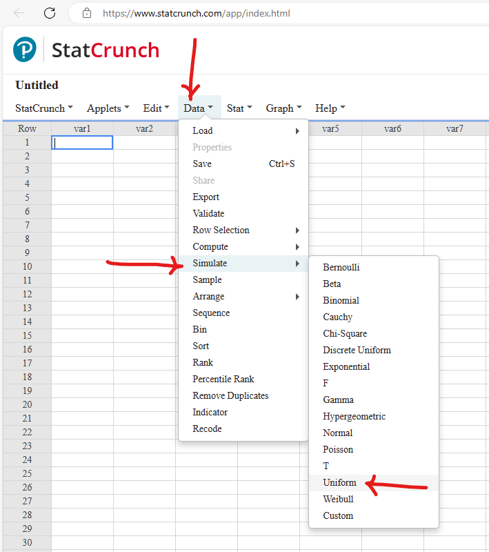
(a.)
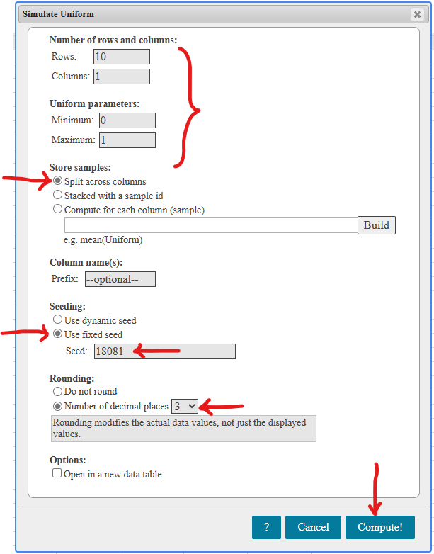
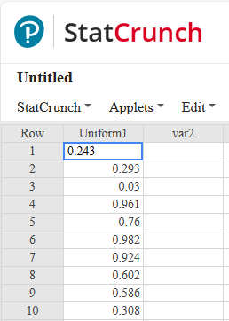
(b.)
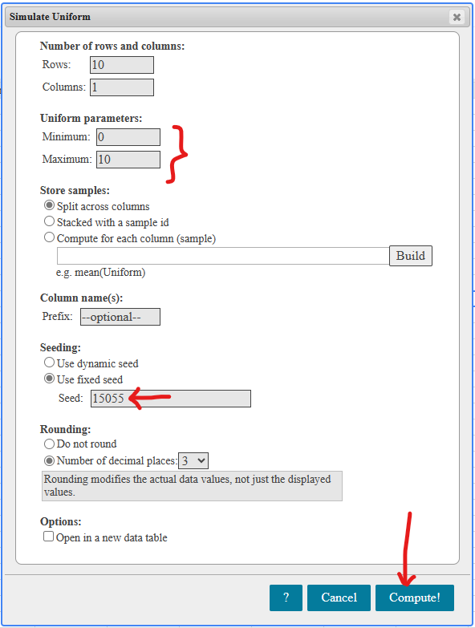
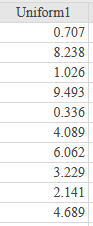
(c.)
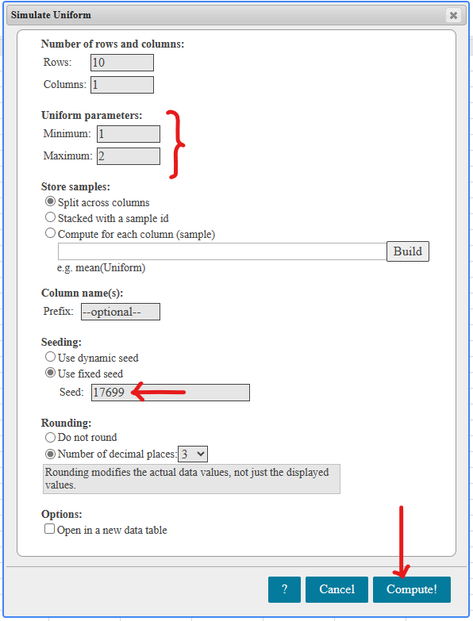
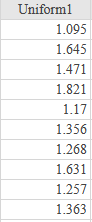
(d.)
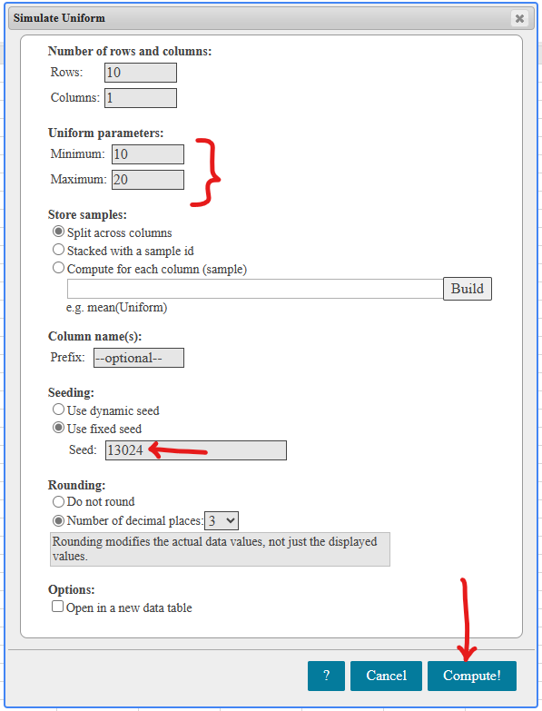
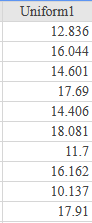
(84.) Use StatCrunch to generate and write down each list of numbers.
Select Data, highlight Simulate, then select Uniform.
A dialog box similar to the one shown here... will appear.
Please review Number (83.) prior to attempting this question.
(a.) Generate ten random numbers between 0 and 1 using the fixed seed value 12450.
(b.) What is the mean of the numbers (to find this, divide the sum of the numbers by 10)?
(c.) Generate ten random numbers between 0 and 1 using the fixed seed value 11823.
(d.) What is the mean of the numbers (to find this, divide the sum of the numbers by 10)?
(e.) Generate ten random numbers between 0 and 1 using the fixed seed value 12522.
(f.) What is the mean of the numbers (to find this, divide the sum of the numbers by 10)?
(g.) Generate ten random numbers between 0 and 1 using the fixed seed value 11927.
(h.) What is the mean of the numbers (to find this, divide the sum of the numbers by 10)?
(Type integers or decimals rounded to three decimal places as needed.)
(i.) How do the four means (including the one for the first set) compare?
(j.) Without carrying out the calculation, what number do you think the average of 1000 random numbers
between 0 and 1 is near? Explain.
(a.) and (b.)
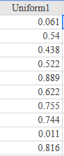
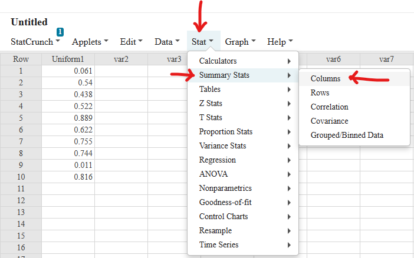
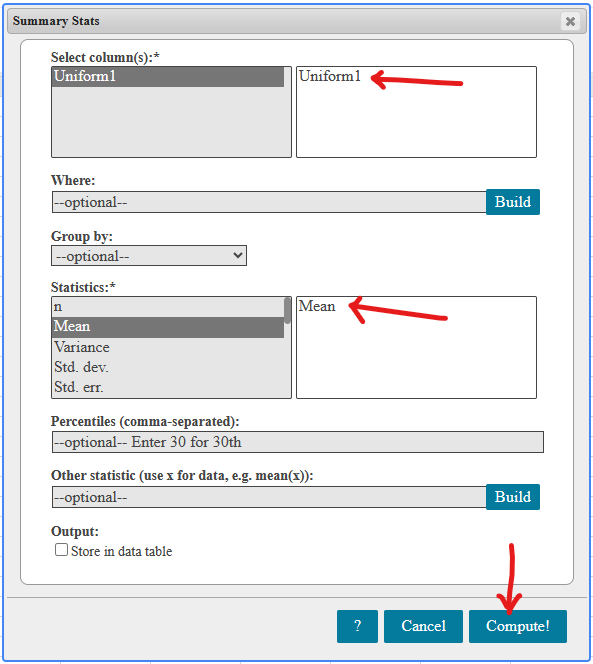
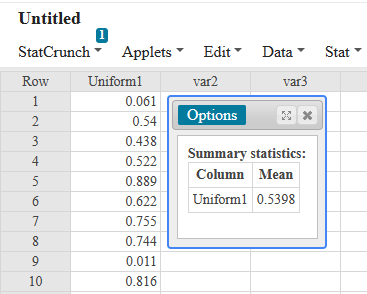
(c.) and (d.)
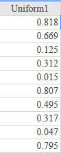
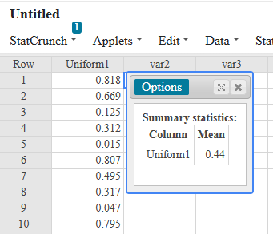
(e.) and (f.)
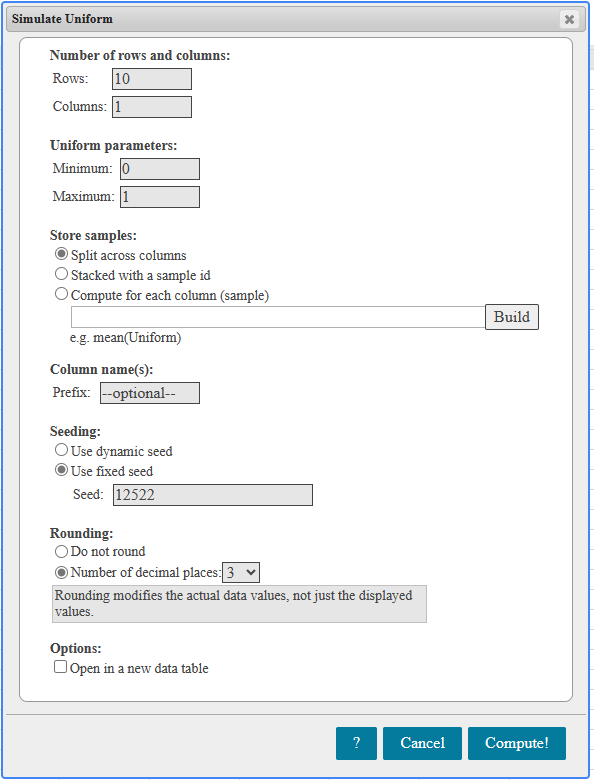
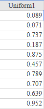
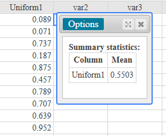
(g.) and (h.)
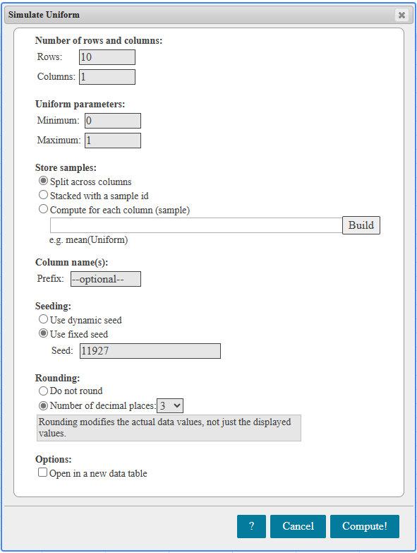
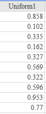
(i.) The means are close to 0.5
(j.) The mean will be near 0.5, because the means of samples from a distribution tend toward the mean of
the distribution.
(85.)
(86.) Decide whether these statements make sense (or is clearly true) or does not make sense (or is
clearly false).
Explain.
(I.) A pollster plans to improve survey results by only conducting polls in which the margin of error is
zero.
(II.) In my statistical study, I used a sample that was larger than the population.
(III.) By choosing my sample carefully, I can make a good estimate of the average height of Americans
by measuring the heights of only 500 people.
(IV.) I followed all the guidelines for sample selection carefully, but my sample still did not reflect
the characteristics of the population.
(V.) I don't believe the results of the experiment because the results were based on interviews and the
study was not double-anonymous.
(VI.) I wanted to test the effects of vitamin C on colds, so I gave the treatment group vitamin C and
gave the control group vitamin D.
(I.)
The statement does not make sense.
A margin of error of zero implies that there is no uncertainty in a survey result.
This could happen only if the entire population was surveyed, rather than just a sample.
(II.) No, the statement does not make sense.
A sample is a subset of the population and cannot be larger than the population.
(III.) The statement makes sense because carefully choosing a sample is likely to result in a sample
that closely resembles the population.
(IV.) The statement makes sense because even if a sample is chosen in the best possible way, it may
not be representative of the population by random chance.
(V.) The statement makes sense because all studies should be double-anonymized.
A study that is not double-anonymous would risk the participant and/or the interviewer influencing
the results by knowing which group the participant was in.
(VI.) The statement does not make sense.
The control group should only receive a placebo, not another treatment.
(87.) Decide whether these studies are observational studies or experiments.
If it is an observational study, identify the type of observational study.
If it is an experiment, identify the treatment and control groups.
(I.) Is a shiatsu massage effective at relieving upper back pain?
(II.) Which of two available treatments is more effective in protecting avocado trees from oriental
fruit flies?
(III.) A study by university social scientists found that 17.3% of first-year women students surveyed
at a college experienced sexual assault during that first year.
(IV.) Does taking a daily aspirin reduce the incidence of brain aneurysms?
(V.) Over a period of many years, which National Hockey League teams with cold-weather home ice have
better records?
(VI.) Using a survey of 1528 people in a country, researchers determined that 86% of people in that
country believe that the country is more politically divided than in the past and that those divisions
will persist.
(VII.) A new seasonal flu vaccine is typically offered every fall.
Public health officials in a particular county survey residents to find out the percentage of residents
in different age categories who choose to get vaccinated in a particular year.
(VIII.) In order to measure the efficacy of a COVID-19 vaccine, researchers inject 500 randomly
selected people with the vaccine and 500 randomly selected people with a solution that doesn't contain
the vaccine.
The infection rates within the two groups are then observed.
(IX.) A national institute's study of 709 melanoma patients and 1090 cancer-free patients matched by
age, sex, and race found that those having a single large mole had twice the risk of melanoma.
Having 10 or more moles was associated with a 12 times greater risk of melanoma.
(X.) In a study of the effects of magnets on back pain, some participants were treated with magnets
while others were given non-magnetic devices with a similar appearance.
The magnets did not appear to be effective in treating back pain.
(XI.) A student in a college sociology class studied mask-wearing compliance during the pandemic by
counting the number of masked and unmasked customers entering a grocery store over a two-hour period.
(XII.) A study at a university separated 115 volunteers into groups, based on psychological tests
designed to determine how often they lied and cheated.
Those with a tendency to lie had different brain structures than those who did not lie.
(XIII.) A study of 2434 runners looked for relationships between specific types of running injuries and
variables such as height, weight, body mass index, age, and running history.
(I.) Experiment Control Group: Sample members without any treatment. Treatment Group: Sample members that receive a shiatsu massage.
Making the study anonymous is not necessary since it would not be possible to hide the treatment
from the sample members.
(II.) Experiment Control Group: Avocado trees without any treatment. Treatment Group: Two treatment groups: one with each treatment being tested.
Making the study anonymous is not necessary since avocado trees do not know whether they are given a
treatment or not.
(III.) Observational Study
It is a cross-sectional study.
(IV.) Experiment Control Group: Sample members that do not take a daily aspirin. Treatment Group: Sample members that receive a daily aspirin.
Making the study anonymous is not necessary since it should be clear if the person suffers a brain
aneurysm.
(V.) Observational Study
The study is a retrospective study. Controls: Teams without cold-weather home ice. Cases: Teams with cold-weather home ice.
(VI.) Observational Study
The study is a cross-sectional study.
It is not a retrospective study.
(VII.) Observational Study: because the public health officials surveyed residents but did not
assign treatments to residents.
It is a cross-sectional study.
(VIII.) Experiment: because the researchers randomly assigned people to receive treatment or not and
measured the results. Control Group: Patients who did not receive the vaccine. Treatment Group: Patients that received the vaccine.
(IX.) Observational Study
The study is a retrospective study. Controls: Patients without melanoma. Cases: Patients with melanoma.
(X.) Experiment Control Group: Patients that received the placebo; double-anonymous. Treatment Group: Patients that used the magnets.
(XI.) Observational Study: because the student counted masked and unmasked customers but did not
require mask-wearing compliance.
It is a cross-sectional study because the study was conducted during the pandemic.
(XII.) Observational Study
The study is a retrospective study. Controls: Volunteers that did not lie. Cases: Volunteers that had a tendency to lie.
(XIII.) Observational Study
The study is a retrospective study. Controls: Runners without any of the running injuries. Cases: Runners with at least one of the running injuries.
(88.) Suppose you attend a school that offers both traditional courses and online courses.
You want to know the average age of all the students.
You walk around campus asking those students that you meet how old they are.
Would this result in an unbiased sample?
A. No, since students themselves choose to participate in the survey, resulting in response
bias.
B. No, since a relatively large number of students may refuse to respond or lie when asked about
their age.
C. No, since this method will not select people who take online classes but may have a different
mean age than the traditional students.
D. Yes, since this sample is random and samples from the entire population.
C. No, since this method will not select people who take online classes but may have a
different mean age than the traditional students.
(89.)
(90.)
(91.) The table gives information on majors at a certain college.
Sketch an appropriate graph of the distribution, and comment on its important features.
Majors
Major
Percentage
H. Humanities
20
SS. Social Science
19
MS. Math and Science
36
I. Interdisciplinary
25
(a.) One type of graph appropriate for showing this distribution is a bar chart.
Which of the following bar charts correctly shows the given distribution?
(b.) What other appropriate graphs cana be used for showing the given distribution?
(c.) Which of the following is the best description of the distribution's important features?
(a.) MS. Math and Science has the highest percentage.
So, Options B and D are eliminated, leaving us with Options A and C
SS. Social Science has the lowest percentage.
Options A and C meet that criteria as well.
On a closer and careful observation of both graphs, we notice that in Option A, the H is 20 and the SS
is 19 (correct)
while in Option C, the H is 19 and the SS is 20 (incorrect)
This shows that the bar chart that correctly shows the given distribution is: Option A.
(b.) Other appropriate graphs that can be used for showing the given distribution are:
Pareto charts and Pie charts because they are suited for presenting categorical variables.
(c.) The mode is Math and Science (MS).
(92.) If a rifleman's gunsight is adjusted correctly but he has shaky arms, he might shoot bullets
scattered widely around the bull's-eye target.
(a.) Draw a sketch of the target with the bullet holes.
(b.) Does this show variation (lack of precision) or bias?
(c.) Draw a second sketch of the target if the shots are both unbiased and precise (have little
variation).
The rifleman's aim is not perfect, so your sketches should show more than one bullet hole.
(a.) The sketch of the target with the bullet holes scattered widely around the bull's-eye target is:
(b.) This shows a lack of precision.
Since the bullets are not clustered close together, the shots are not precise.
The results are not biased since the bullets missed in different directions.
(c.) The sketch that shows that the shots are both unbiased and precise is:
(93.)
(94.) A researcher wants to determine the typical dietary habits of students at a college.
State whether each of the following samples is likely to be representative.
Sample 1: Students in a single sorority. Sample 2: Students majoring in Accounting. Sample 3: Students who participate in the Student Council. Sample 4: Students enrolled in a required Computer Science class.
The only sample that might be representative would be sample 4, since all students are required to
take the Computer Science class.
This means that sampling from that class would be almost the same as sampling from the entire
student population.